Q01 · 50.3 / The Vertebrate Visual System 正式分類
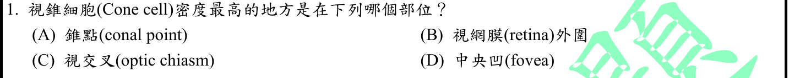
本地原卷PDF27 · 官方混科卷PDF27 · 官方原答案PDF1最下方生物表 · 已核對生物釋疑PDF3下方–5
官方採計：D 原答案：D
未列於本輪取得113生物釋疑PDF3下方至5；依同年度答案PDF1最下方生物表採計
主分類：Ch50 Sensory and Motor Mechanisms
50.3 / The Vertebrate Visual System
目錄行3364；條目起始印刷頁1119；實際目錄 PDF49
主分類理由：50.3 / The Vertebrate Visual System：題目以視錐分布辨認中央凹，屬脊椎動物視覺受器與視網膜構造。
次分類理由：無另列最小次條目；核對1122–1123連續段落，題問視錐密度而非動作電位或視覺中樞，50.3視覺最小條目足夠，答案D一致。
科學說明：D。印刷1122–1123指出中央凹有最高視錐密度，周邊比例下降；視交叉是軸突路徑，非感光細胞聚集處。原題conal point保留，不另創造對應教材構造。
來源涵蓋範圍：Campbell正文支援分類原理；題目限定及來源措辭差異保留於科學說明。
教材正文：印刷1119／PDF1168、印刷1120／PDF1169、印刷1121／PDF1170、印刷1122／PDF1171、印刷1123／PDF1172
補充來源：本題未另列課本外來源
另行比較：中央凹與周邊視網膜、視交叉是否混淆；是否需另列神經傳導章？
核對1122–1123連續段落，題問視錐密度而非動作電位或視覺中樞，50.3視覺最小條目足夠，答案D一致。
結論：證據確認，分類疑義已解決。完整覆核紀錄
Q02 · 6.4 / Lysosomes: Digestive Compartments 正式分類
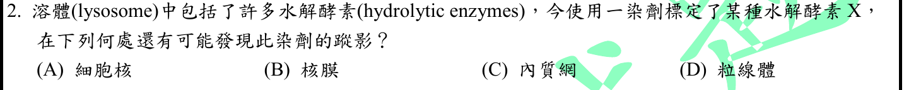
本地原卷PDF27 · 官方混科卷PDF27 · 官方原答案PDF1最下方生物表 · 釋疑PDF3
官方採計：C 原答案：C
同年度釋疑維持原答案C
主分類：Ch06 A Tour of the Cell
6.4 / Lysosomes: Digestive Compartments
目錄行349；條目起始印刷頁107；實際目錄 PDF36
次分類：Ch06 A Tour of the Cell
6.4 / The Endoplasmic Reticulum: Biosynthetic Factory
目錄行343；條目起始印刷頁104；實際目錄 PDF36
主分類理由：6.4 / Lysosomes: Digestive Compartments：水解酵素的胞器來源與溶體功能為判斷核心。
次分類理由：6.4 / The Endoplasmic Reticulum: Biosynthetic Factory：溶體酵素由粗糙內質網合成並循分泌路徑輸送，須記生成位置。
科學說明：C，釋疑維持。以標定特定溶體水解酵素追蹤其生合成運送路徑，粗糙ER→Golgi→lysosome；不是任意染劑的分布實驗。釋疑引用Campbell第7章與本地12e第6章不同；其粒線體歷史討論不表示粒線體會生成本題溶體酵素。
來源涵蓋範圍：Campbell正文支援分類原理；題目限定及來源措辭差異保留於科學說明。
教材正文：印刷104／PDF153、印刷105／PDF154、印刷106／PDF155、印刷107／PDF156、印刷108／PDF157
補充來源：本題未另列課本外來源
另行比較：官方引用第7章是否可直接當本地教材頁；核膜是否因連續ER而同樣選取？
本地12e107明載溶體水解酵素在粗ER製造，104–106提供ER路徑；維持C的同年釋疑已讀。核膜連續性不使題問的主要合成部位改成核膜，主溶體次ER合理，官方章號差異保留。
結論：證據確認，分類疑義已解決。完整覆核紀錄
Q03 · 54.2 / Species Diversity 正式分類
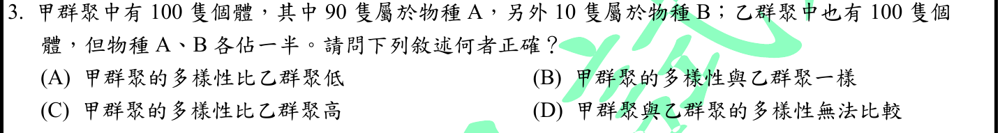
本地原卷PDF27 · 官方混科卷PDF27 · 官方原答案PDF1最下方生物表 · 已核對生物釋疑PDF3下方–5
官方採計：A 原答案：A
未列於本輪取得113生物釋疑PDF3下方至5；依同年度答案PDF1最下方生物表採計
主分類：Ch54 Community Ecology
54.2 / Species Diversity
目錄行3611；條目起始印刷頁1222；實際目錄 PDF50
主分類理由：54.2 / Species Diversity：兩群聚物種數相同而相對豐度不同，需同時評估豐富度與均勻度。
次分類理由：無另列最小次條目；獨立代入兩組比例而非重用總數，甲均勻度及Shannon較低；題問多樣性，54.2 Species Diversity正中核心，無需擴增族群成長次章。
科學說明：A。兩群聚皆2種100個體，甲90:10較不均勻；Shannon指數重算甲0.325083、乙0.693147（自然對數），甲多樣性較低。不是以總個體數或僅物種數判斷。
來源涵蓋範圍：Campbell正文支援分類原理；題目限定及來源措辭差異保留於科學說明。
教材正文：印刷1222／PDF1271、印刷1223／PDF1272
補充來源：本題未另列課本外來源
另行比較：只計物種豐富度會得相同，能否據此選B？
獨立代入兩組比例而非重用總數，甲均勻度及Shannon較低；題問多樣性，54.2 Species Diversity正中核心，無需擴增族群成長次章。
結論：證據確認，分類疑義已解決。完整覆核紀錄
Q04 · 44.5 / Homeostatic Regulation of the Kidney 正式分類
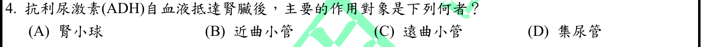
本地原卷PDF27 · 官方混科卷PDF27 · 官方原答案PDF1最下方生物表 · 釋疑PDF3、釋疑PDF4
官方採計：D 原答案：D
同年度釋疑維持原答案D
主分類：Ch44 Osmoregulation and Excretion
44.5 / Homeostatic Regulation of the Kidney
目錄行2987；條目起始印刷頁994；實際目錄 PDF47
次分類：Ch44 Osmoregulation and Excretion
44.4 / From Blood Filtrate to Urine: A Closer Look
目錄行2974；條目起始印刷頁987；實際目錄 PDF47
主分類理由：44.5 / Homeostatic Regulation of the Kidney：問ADH在腎的主要標的，直接屬腎臟功能恆定調節。
次分類理由：44.4 / From Blood Filtrate to Urine: A Closer Look：集尿管與遠曲小管在腎元的分工須由濾液形成尿液條目辨識。
科學說明：D，釋疑維持且承認遠曲小管後段也受影響。ADH促集尿管水通透性及水重吸收；「主要」不等於「唯一」。原題集尿管用語保留，未將遠曲小管從科學說明刪除。
來源涵蓋範圍：Campbell正文支援分類原理；題目限定及來源措辭差異保留於科學說明。
教材正文：印刷987／PDF1036、印刷988／PDF1037、印刷989／PDF1038、印刷994／PDF1043、印刷995／PDF1044
補充來源：本題未另列課本外來源
另行比較：遠曲小管也受ADH作用，是否分類或採計應改為C？
釋疑跨PDF3–4明辨late distal與主要collecting duct；本地994–995亦以集尿管為主要，官方D保留。腎元結構列同章次目，並非將遠曲功能否認。
結論：證據確認，分類疑義已解決。完整覆核紀錄
Q05 · 39.3 / Photoperiodism and Responses to Seasons 正式分類
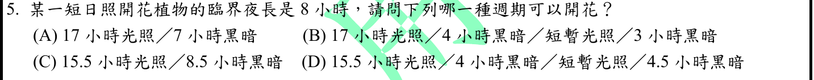
本地原卷PDF27 · 官方混科卷PDF27 · 官方原答案PDF1最下方生物表 · 已核對生物釋疑PDF3下方–5
官方採計：C 原答案：C
未列於本輪取得113生物釋疑PDF3下方至5；依同年度答案PDF1最下方生物表採計
主分類：Ch39 Plant Responses to Internal and External Signals
39.3 / Photoperiodism and Responses to Seasons
目錄行2576；條目起始印刷頁859；實際目錄 PDF45
主分類理由：39.3 / Photoperiodism and Responses to Seasons：臨界夜長與夜間光中斷控制開花，直接對應光週期反應。
次分類理由：無另列最小次條目；檢查原題短暫光照位於夜內；教材連續黑暗的條件排除D，C為唯一不中斷超過臨界值。分類只需光週期，不另加一般光合作用。
科學說明：C。短日照植物須連續黑暗超過8小時；8.5小時不中斷符合。A僅7小時；B、D夜間被短暫光照切斷，不能只加總黑暗時數。
來源涵蓋範圍：Campbell正文支援分類原理；題目限定及來源措辭差異保留於科學說明。
教材正文：印刷859／PDF908、印刷860／PDF909
補充來源：本題未另列課本外來源
另行比較：D總黑暗時數8.5小時，是否和C等效？
檢查原題短暫光照位於夜內；教材連續黑暗的條件排除D，C為唯一不中斷超過臨界值。分類只需光週期，不另加一般光合作用。
結論：證據確認，分類疑義已解決。完整覆核紀錄
Q06 · 38.1 / Methods of Pollination 正式分類
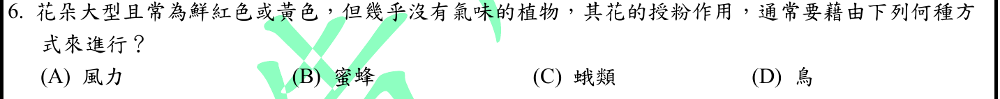
本地原卷PDF27 · 官方混科卷PDF27 · 官方原答案PDF1最下方生物表 · 已核對生物釋疑PDF3下方–5
官方採計：D 原答案：D
未列於本輪取得113生物釋疑PDF3下方至5；依同年度答案PDF1最下方生物表採計
主分類：Ch38 Angiosperm Reproduction and Biotechnology
38.1 / Methods of Pollination
目錄行2483；條目起始印刷頁825；實際目錄 PDF45
主分類理由：38.1 / Methods of Pollination：花色、大小與氣味推定常見傳粉媒介，屬授粉方式。
次分類理由：無另列最小次條目；原題用通常，且問植物授粉方式；鳥媒症候群符合所給組合，38.1主目維持。沒有把一般化特徵提升成絕對物種鑑定。
科學說明：D。大而鮮紅或黃色、氣味少是常見鳥媒花組合；風媒一般不需醒目花冠，蛾媒常依賴夜間香味，蜂媒的典型特徵不同。這是授粉症候群的通常關係，不保證每種植物只能由鳥授粉。
來源涵蓋範圍：Campbell正文支援分類原理；題目限定及來源措辭差異保留於科學說明。
教材正文：印刷825／PDF874、印刷826／PDF875、印刷827／PDF876
補充來源：本題未另列課本外來源
另行比較：鮮紅／黃色與無味能否必然唯一指鳥；是否應以動物行為作主？
原題用通常，且問植物授粉方式；鳥媒症候群符合所給組合，38.1主目維持。沒有把一般化特徵提升成絕對物種鑑定。
結論：證據確認，分類疑義已解決。完整覆核紀錄
Q07 · 20.1 / Expressing Cloned Eukaryotic Genes 正式分類
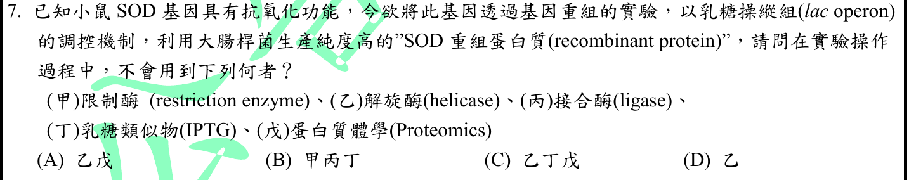
本地原卷PDF27 · 官方混科卷PDF27 · 官方原答案PDF1最下方生物表 · 釋疑PDF4
官方採計：A 原答案：A
同年度釋疑維持原答案A
主分類：Ch20 DNA Tools and Biotechnology
20.1 / Expressing Cloned Eukaryotic Genes
目錄行1244；條目起始印刷頁422；實際目錄 PDF40
次分類：Ch20 DNA Tools and Biotechnology
20.1 / Using Restriction Enzymes to Make a Recombinant DNA Plasmid
文字目錄漏DNA；實際PDF40目錄與正文419為Recombinant DNA Plasmid，原文字來源不改。 目錄行1238；條目起始印刷頁419；實際目錄 PDF40
次分類：Ch18 Regulation of Gene Expression
18.1 / Repressible and Inducible Operons: Two Types of Negative Gene Regulation
目錄行1110；條目起始印刷頁368；實際目錄 PDF39
次分類：Ch21 Genomes and Their Evolution
21.2 / Understanding Genes and Gene Expression at the Systems Level
目錄行1307；條目起始印刷頁446；實際目錄 PDF40
主分類理由：20.1 / Expressing Cloned Eukaryotic Genes：目標是讓大腸桿菌表現真核SOD重組蛋白，優先歸於克隆真核基因表現。
次分類理由：20.1 / Using Restriction Enzymes to Make a Recombinant DNA Plasmid：限制酶與接合酶參與傳統重組載體建構；18.1 / Repressible and Inducible Operons: Two Types of Negative Gene Regulation：lac調控及IPTG誘導是題目指定的表現開關；21.2 / Understanding Genes and Gene Expression at the Systems Level：蛋白質體學研究整體蛋白組，與單一目的蛋白製備區分。
科學說明：A（乙戊），釋疑維持。題目預設傳統限制酶／接合酶重組與IPTG誘導流程；不需另加純化解旋酶，蛋白質體學也不是生產單一SOD的必要程序。不表示大腸桿菌自身沒有helicase、蛋白純度不能分析，或所有重組技術都必用限制酶。使用質譜檢查單一蛋白也不自動等於蛋白質體學。L1238文字目錄漏DNA，採PDF40與正文的完整題名。
來源涵蓋範圍：Campbell正文支援分類原理；題目限定及來源措辭差異保留於科學說明。
教材正文：印刷368／PDF417、印刷369／PDF418、印刷419／PDF468、印刷420／PDF469、印刷422／PDF471、印刷423／PDF472、印刷446／PDF495、印刷447／PDF496
補充來源：本題未另列課本外來源
另行比較：是否把蛋白純度分析都叫Proteomics，或因細胞內有helicase而改選D？
官方7說明質譜可作純度分析而非必然proteomics；題設操作所需與細胞內常駐機制不同。重組表現為主，限制／接合、lac誘導、蛋白體範圍三個次目都有獨立判斷作用，保留20章同章次目。
結論：證據確認，分類疑義已解決。完整覆核紀錄
Q08 · 31.1 / Nutrition and Ecology 正式分類
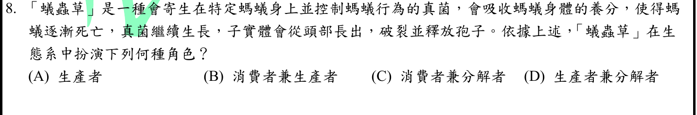
本地原卷PDF27 · 官方混科卷PDF27 · 官方原答案PDF1最下方生物表 · 已核對生物釋疑PDF3下方–5
官方採計：C 原答案：C
未列於本輪取得113生物釋疑PDF3下方至5；依同年度答案PDF1最下方生物表採計
主分類：Ch31 Fungi
31.1 / Nutrition and Ecology
目錄行1966；條目起始印刷頁655；實際目錄 PDF43
次分類：Ch31 Fungi
31.5 / Fungi as Decomposers
目錄行2018；條目起始印刷頁667；實際目錄 PDF43
主分類理由：31.1 / Nutrition and Ecology：題幹描述真菌吸收宿主营養，應由真菌營養生態判斷寄生與死亡後取食。
次分類理由：31.5 / Fungi as Decomposers：螞蟻死亡後真菌繼續利用有機物，需保留真菌分解者功能。
科學說明：C。依題文，活宿主階段為寄生性消費者，死亡後繼續利用有機物而具分解作用；無光合生產者角色。分解者在廣義能量分類亦屬異營消費者，兩標籤不必互斥；不由俗名推定未給出的真菌物種。
來源涵蓋範圍：Campbell正文支援分類原理；題目限定及來源措辭差異保留於科學說明。
教材正文：印刷655／PDF704、印刷656／PDF705、印刷667／PDF716
補充來源：本題未另列課本外來源
另行比較：寄生蟲草是消費者還是分解者，應否只選單一營養層級？
依題幹先活體吸養分後宿主死而繼續生長，比對真菌營養及分解兩段，C符合兩階段。沒有以未確定物種生態取代原題條件。
結論：證據確認，分類疑義已解決。完整覆核紀錄
Q09 · 42.3 / Blood Pressure 正式分類
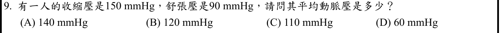
本地原卷PDF28 · 官方混科卷PDF28 · 官方原答案PDF1最下方生物表 · 已核對生物釋疑PDF3下方–5
官方採計：C 原答案：C
未列於本輪取得113生物釋疑PDF3下方至5；依同年度答案PDF1最下方生物表採計
主分類：Ch42 Circulation and Gas Exchange
42.3 / Blood Pressure
目錄行2789；條目起始印刷頁930；實際目錄 PDF46
主分類理由：42.3 / Blood Pressure：收縮與舒張壓換算平均動脈壓是血壓指標問題。
次分類理由：無另列最小次條目；分別重算120、60、110並命名為端值平均、脈壓、慣用MAP估計。公式使用界線另查，主血壓條目足夠且採C。
科學說明：C。MAP≈DBP+(SBP−DBP)/3=90+(150−90)/3=110 mmHg；60是脈壓，120是兩端點算術平均。三分之一公式是常見靜息周邊動脈近似，不是所有心率及波形下的精確時間積分。
來源涵蓋範圍：Campbell支援所列分類原理；具名物種地點、現代技術與科學界線由列示來源補足，實讀範圍見來源紀錄。
教材正文：印刷930／PDF979、印刷931／PDF980、印刷932／PDF981
補充來源：S01
另行比較：150與90直接平均或只取差值，哪一個量才是MAP？
分別重算120、60、110並命名為端值平均、脈壓、慣用MAP估計。公式使用界線另查，主血壓條目足夠且採C。
結論：證據確認，分類疑義已解決。完整覆核紀錄
Q10 · 43.3 / Immunization 正式分類
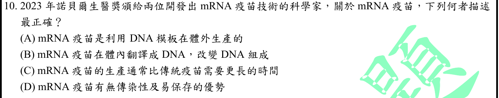
本地原卷PDF28 · 官方混科卷PDF28 · 官方原答案PDF1最下方生物表 · 已核對生物釋疑PDF3下方–5
官方採計：A 原答案：A
未列於本輪取得113生物釋疑PDF3下方至5；依同年度答案PDF1最下方生物表採計
主分類：Ch43 The Immune System
43.3 / Immunization
目錄行2908；條目起始印刷頁968；實際目錄 PDF47
次分類：Ch17 Gene Expression: From Gene to Protein
17.2 / Molecular Components of Transcription
目錄行1049；條目起始印刷頁342；實際目錄 PDF39
主分類理由：43.3 / Immunization：技術情境為疫苗誘導適應性免疫，主列免疫接種。
次分類理由：17.2 / Molecular Components of Transcription：由DNA模板製備mRNA的判斷需轉錄機制。
科學說明：A。mRNA以DNA模板體外轉錄，進入細胞後翻譯的是蛋白質，不是DNA。平台通常可快速設計製造；RNA穩定性及遞送有要求，D的「易保存」不能作普遍優勢。Nobel2023官方背景支援本題現代技術，本地12e提供免疫與轉錄原理，未冒稱其已載2023得獎事件。
來源涵蓋範圍：Campbell支援所列分類原理；具名物種地點、現代技術與科學界線由列示來源補足，實讀範圍見來源紀錄。
教材正文：印刷342／PDF391、印刷343／PDF392、印刷344／PDF393、印刷968／PDF1017
補充來源：S02
另行比較：題目時事應主分DNA轉錄還是疫苗免疫；D無傳染性是否足以成立？
完整D另有易保存，不能只取半句；Nobel背景與Campbell轉錄對照後A明確。主免疫接種保留題意，轉錄次章補機制；本地教材未涵2023時事的限制已記。
結論：證據確認，分類疑義已解決。完整覆核紀錄
Q11 · 15.3 / Mapping the Distance Between Genes Using Recombination Data: Scientific Inquiry 正式分類
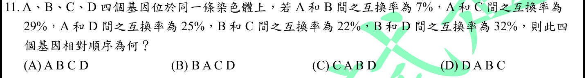
本地原卷PDF28 · 官方混科卷PDF28 · 官方原答案PDF1最下方生物表 · 已核對生物釋疑PDF3下方–5
官方採計：D 原答案：D
未列於本輪取得113生物釋疑PDF3下方至5；依同年度答案PDF1最下方生物表採計
主分類：Ch15 The Chromosomal Basis of Inheritance
15.3 / Mapping the Distance Between Genes Using Recombination Data: Scientific Inquiry
目錄行961；條目起始印刷頁305；實際目錄 PDF39
主分類理由：15.3 / Mapping the Distance Between Genes Using Recombination Data: Scientific Inquiry：以兩點重組資料重建相對基因位置，為連鎖圖譜。
次分類理由：無另列最小次條目；在A=0、B=7下，由AC29與BC22固定C=29，再由AD25與BD32固定D=−25；五距離一致，除鏡像外位置確定。圖距與觀測重組率分開，主連鎖圖譜無分類疑義。
科學說明：D，順序D–A–B–C，反向等價。令A=0、B=7、C=29、D=−25，五個給定距離皆吻合。這是題目線性圖距模型，不能將D至C的54圖距直接當作54%可觀測重組率；遠距離重組有多次互換限制。
來源涵蓋範圍：Campbell正文支援分類原理；題目限定及來源措辭差異保留於科學說明。
教材正文：印刷305／PDF354、印刷306／PDF355、印刷307／PDF356
補充來源：本題未另列課本外來源
另行比較：是否ABC之外的D位置有另一解；可否把54當重組百分比？
在A=0、B=7下，由AC29與BC22固定C=29，再由AD25與BD32固定D=−25；五距離一致，除鏡像外位置確定。圖距與觀測重組率分開，主連鎖圖譜無分類疑義。
結論：證據確認，分類疑義已解決。完整覆核紀錄
Q12 · 16.2 / Replicating the Ends of DNA Molecules 正式分類
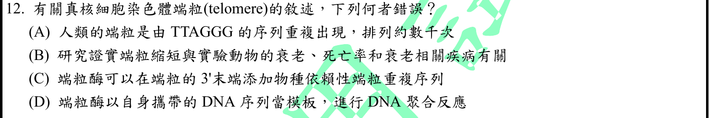
本地原卷PDF28 · 官方混科卷PDF28 · 官方原答案PDF1最下方生物表 · 已核對生物釋疑PDF3下方–5
官方採計：D 原答案：D
未列於本輪取得113生物釋疑PDF3下方至5；依同年度答案PDF1最下方生物表採計
主分類：Ch16 The Molecular Basis of Inheritance
16.2 / Replicating the Ends of DNA Molecules
目錄行1019；條目起始印刷頁328；實際目錄 PDF39
主分類理由：16.2 / Replicating the Ends of DNA Molecules：端粒與端粒酶解決線性DNA末端複製問題。
次分類理由：無另列最小次條目；Nobel官方RNA模板證據補足本地端粒末端延長原理。反應產物為DNA而模板為RNA，D错誤確定；不把端粒病與所有衰老直接劃等號。
科學說明：D錯在「自身攜帶的DNA模板」，應為RNA模板，蛋白組件催化DNA延長。人類TTAGGG與不同物種端粒序列須分開；端粒縮短與衰老相關不等於能單憑端粒長度精確決定個體壽命。
來源涵蓋範圍：Campbell支援所列分類原理；具名物種地點、現代技術與科學界線由列示來源補足，實讀範圍見來源紀錄。
教材正文：印刷328／PDF377、印刷329／PDF378
補充來源：S03
另行比較：端粒DNA重複序列與端粒酶內模板是哪個分子？
Nobel官方RNA模板證據補足本地端粒末端延長原理。反應產物為DNA而模板為RNA，D错誤確定；不把端粒病與所有衰老直接劃等號。
結論：證據確認，分類疑義已解決。完整覆核紀錄
Q13 · 43.3 / B Cells and Antibodies: A Response to Extracellular Pathogens 正式分類
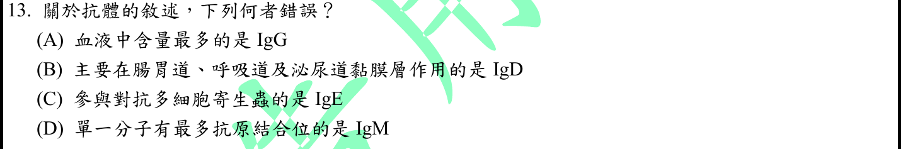
本地原卷PDF28 · 官方混科卷PDF28 · 官方原答案PDF1最下方生物表 · 已核對生物釋疑PDF3下方–5
官方採計：B 原答案：B
未列於本輪取得113生物釋疑PDF3下方至5；依同年度答案PDF1最下方生物表採計
主分類：Ch43 The Immune System
43.3 / B Cells and Antibodies: A Response to Extracellular Pathogens
目錄行2899；條目起始印刷頁964；實際目錄 PDF47
主分類理由：43.3 / B Cells and Antibodies: A Response to Extracellular Pathogens：抗體同型的位置、抗原結合數與防禦功能屬B細胞抗體反應。
次分類理由：無另列最小次條目；本地966辨認IgA黏膜及分泌IgM結構，B錯誤明確。IgM膜型與分泌型界線寫入，不再沿用前年度題目的IgD採計問題。
科學說明：B。黏膜主要為IgA，IgG是血中主要類型，IgE參與多細胞寄生蟲反應；分泌型五聚體IgM通常有10個抗原結合位。最後一項不應外推成B細胞膜上單體IgM也有10位；本地966的IgD概述不需擴寫成任何IgD都不可能分泌。
來源涵蓋範圍：Campbell正文支援分類原理；題目限定及來源措辭差異保留於科學說明。
教材正文：印刷964／PDF1013、印刷965／PDF1014、印刷966／PDF1015
補充來源：本題未另列課本外來源
另行比較：IgD黏膜作用與IgM十個結合位是否皆可照搬為所有形式？
本地966辨認IgA黏膜及分泌IgM結構，B錯誤明確。IgM膜型與分泌型界線寫入，不再沿用前年度題目的IgD採計問題。
結論：證據確認，分類疑義已解決。完整覆核紀錄
Q14 · 43.4 / Exaggerated, Self-Directed, and Diminished Immune Responses 正式分類
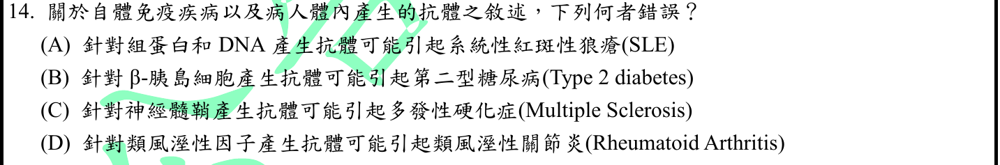
本地原卷PDF28 · 官方混科卷PDF28 · 官方原答案PDF1最下方生物表 · 已核對生物釋疑PDF3下方–5
官方採計：B 原答案：B
未列於本輪取得113生物釋疑PDF3下方至5；依同年度答案PDF1最下方生物表採計
主分類：Ch43 The Immune System
43.4 / Exaggerated, Self-Directed, and Diminished Immune Responses
目錄行2924；條目起始印刷頁970；實際目錄 PDF47
主分類理由：43.4 / Exaggerated, Self-Directed, and Diminished Immune Responses：辨識自體免疫病及自體標的，主列失調與自我導向免疫反應。
次分類理由：無另列最小次條目；重新看完整Q14，D確寫針對RF產生抗體；原始研究RF定義否定這種單因敘述。本題未列取得釋疑，採計仍B，來源衝突明記。主自體免疫條目即使有兩處題文問題仍可確定。
科學說明：官方B：胰島β細胞自體免疫對應第一型，而非題寫第二型糖尿病。另保留D的科學問題：類風濕因子RF本身是針對IgG等的自體抗體，不能簡化成「針對類風溼性因子產生抗體」就造成RA。MS與第一型糖尿病也不能概括成只有抗體介導。未取得本題改答案公告，科學差異不擅改官方採計。
來源涵蓋範圍：Campbell支援所列分類原理；具名物種地點、現代技術與科學界線由列示來源補足，實讀範圍見來源紀錄。
教材正文：印刷970／PDF1019、印刷971／PDF1020
補充來源：S04
另行比較：官方B之外D的RF敘述是否科學正確；要不要改官方答案？
重新看完整Q14，D確寫針對RF產生抗體；原始研究RF定義否定這種單因敘述。本題未列取得釋疑，採計仍B，來源衝突明記。主自體免疫條目即使有兩處題文問題仍可確定。
結論：證據確認，分類疑義已解決。完整覆核紀錄
Q15 · 44.5 / Homeostatic Regulation of the Kidney 正式分類
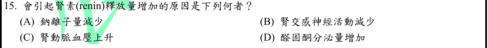
本地原卷PDF28 · 官方混科卷PDF28 · 官方原答案PDF1最下方生物表 · 已核對生物釋疑PDF3下方–5
官方採計：A 原答案：A
未列於本輪取得113生物釋疑PDF3下方至5；依同年度答案PDF1最下方生物表採計
主分類：Ch44 Osmoregulation and Excretion
44.5 / Homeostatic Regulation of the Kidney
目錄行2987；條目起始印刷頁994；實際目錄 PDF47
主分類理由：44.5 / Homeostatic Regulation of the Kidney：腎素啟動RAAS以調整體液量及血壓，屬腎功能恆定調節。
次分類理由：無另列最小次條目；核對RAAS及低管腔NaCl研究，按題設典型失鹽訊號選A；原題省略部位不得補成唯一血鈉機制。分類為腎恆定，無需另加一般神經傳導次章。
科學說明：A。在低NaCl到達緻密斑或失鹽低容量的題設下腎素增加；交感活動下降、腎灌流壓升高通常反向。原文「鈉離子量減少」未交代位置與容量，保留這個限定，不能直接等同任何低血鈉都提高腎素。
來源涵蓋範圍：Campbell支援所列分類原理；具名物種地點、現代技術與科學界線由列示來源補足，實讀範圍見來源紀錄。
教材正文：印刷994／PDF1043、印刷995／PDF1044、印刷996／PDF1045
補充來源：S05
另行比較：A的鈉少是血漿濃度、管腔負荷或容量；其他選項能否上調腎素？
核對RAAS及低管腔NaCl研究，按題設典型失鹽訊號選A；原題省略部位不得補成唯一血鈉機制。分類為腎恆定，無需另加一般神經傳導次章。
結論：證據確認，分類疑義已解決。完整覆核紀錄
Q16 · 50.5 / Vertebrate Skeletal Muscle 正式分類
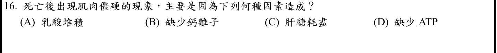
本地原卷PDF28 · 官方混科卷PDF28 · 官方原答案PDF1最下方生物表 · 已核對生物釋疑PDF3下方–5
官方採計：D 原答案：D
未列於本輪取得113生物釋疑PDF3下方至5；依同年度答案PDF1最下方生物表採計
主分類：Ch50 Sensory and Motor Mechanisms
50.5 / Vertebrate Skeletal Muscle
目錄行3381；條目起始印刷頁1126；實際目錄 PDF49
次分類：Ch08 An Introduction to Metabolism
8.3 / The Structure and Hydrolysis of ATP
目錄行504；條目起始印刷頁150；實際目錄 PDF37
主分類理由：50.5 / Vertebrate Skeletal Muscle：屍僵由肌絲交叉橋無法解離造成，核心是骨骼肌收縮機制。
次分類理由：8.3 / The Structure and Hydrolysis of ATP：ATP結合／水解提供肌球蛋白循環所需能量及構形變化。
科學說明：D。ATP不足使肌球蛋白難以自肌動蛋白解離，Ca調控與回收亦受影響；不是「缺少鈣」導致收縮卡住，也不是乳酸或肝醣缺乏本身作直接交叉橋原因。ATP結合促解離，水解使頭部再活化，兩步不能混為一談。
來源涵蓋範圍：Campbell正文支援分類原理；題目限定及來源措辭差異保留於科學說明。
教材正文：印刷150／PDF199、印刷151／PDF200、印刷1126／PDF1175、印刷1127／PDF1176、印刷1128／PDF1177
補充來源：本題未另列課本外來源
另行比較：屍僵是否因沒有Ca或只是沒有儲能物質？
肌球蛋白與actin解離需新ATP結合，缺乏ATP最直接，D保留。骨骼肌主目與ATP水解次章互補，並明辨結合和水解不同步驟。
結論：證據確認，分類疑義已解決。完整覆核紀錄
Q17 · 43.3 / Immune Rejection 正式分類
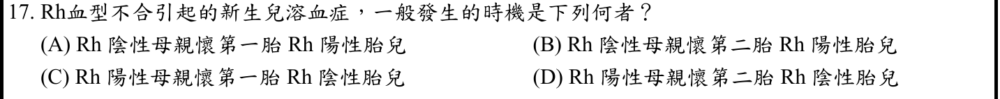
本地原卷PDF29 · 官方混科卷PDF29 · 官方原答案PDF1最下方生物表 · 已核對生物釋疑PDF3下方–5
官方採計：B 原答案：B
未列於本輪取得113生物釋疑PDF3下方至5；依同年度答案PDF1最下方生物表採計
主分類：Ch43 The Immune System
43.3 / Immune Rejection
目錄行2917；條目起始印刷頁969；實際目錄 PDF47
次分類：Ch43 The Immune System
43.2 / B Cell and T Cell Development
目錄行2889；條目起始印刷頁960；實際目錄 PDF47
主分類理由：43.3 / Immune Rejection：母胎Rh抗原不相容與抗體攻擊異體紅血球，對應免疫排斥。
次分類理由：43.2 / B Cell and T Cell Development：前次致敏、再次應答增強需保留B/T細胞發展條目內免疫記憶。
科學說明：B為一般教科書情境：Rh陰性母親先致敏，後續Rh陽性胎兒可受跨胎盤IgG影響。不是第二胎必發，既往輸血、流產或早期母胎出血可使第一個活產胎兒受影響；已有預防措施也會改變風險。本地969–970提供血型排斥原理，Rh細節另依NCBI教材，沒有把ABO段落冒稱Rh原文。
來源涵蓋範圍：Campbell支援所列分類原理；具名物種地點、現代技術與科學界線由列示來源補足，實讀範圍見來源紀錄。
教材正文：印刷960／PDF1009、印刷961／PDF1010、印刷962／PDF1011、印刷969／PDF1018、印刷970／PDF1019
補充來源：S06
另行比較：第二胎敘述是否絕對；Campbell的ABO圖是否可冒當Rh專證？
專查Rh教材的首次致敏與後續IgG反應，確認常見B而非任何第二胎必病；本地免疫排斥與記憶是分類原理，Rh實讀來源另標。兩者沒有來源範圍混用。
結論：證據確認，分類疑義已解決。完整覆核紀錄
Q18 · 49.2 / The vertebrate brain is regionally specialized 正式分類
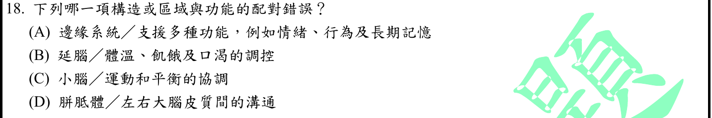
本地原卷PDF29 · 官方混科卷PDF29 · 官方原答案PDF1最下方生物表 · 已核對生物釋疑PDF3下方–5
官方採計：B 原答案：B
未列於本輪取得113生物釋疑PDF3下方至5；依同年度答案PDF1最下方生物表採計
主分類：Ch49 Nervous Systems
49.2 / The vertebrate brain is regionally specialized
目錄行3251；條目起始印刷頁1091；實際目錄 PDF48
主分類理由：49.2 / The vertebrate brain is regionally specialized：四項皆為腦區與功能，最小實際目錄為Concept49.2；腦幹／下視丘正文在更細的Arousal and Sleep之前，不能虛構腦區子目。
次分類理由：無另列最小次條目；實看PDF48目錄，49.2下面最早葉項從1094睡眠開始；1091–1093各腦區為Concept正文，因此真實Concept49.2是本題最小可用目錄，B功能屬下視丘。
科學說明：B。體溫、飢餓與口渴主要由下視丘調控，延腦偏基本自律功能；小腦協調動作平衡，胼胝體連接兩側皮質，邊緣迴路參與情緒及記憶。Q18採真實Concept49.2，是因沒有符合本題的更小目錄條目，而非省略可用葉節點。
來源涵蓋範圍：Campbell正文支援分類原理；題目限定及來源措辭差異保留於科學說明。
教材正文：印刷1091／PDF1140、印刷1092／PDF1141、印刷1093／PDF1142
補充來源：本題未另列課本外來源
另行比較：能否創造Brain Regions葉項或硬塞Arousal and Sleep？
實看PDF48目錄，49.2下面最早葉項從1094睡眠開始；1091–1093各腦區為Concept正文，因此真實Concept49.2是本題最小可用目錄，B功能屬下視丘。
結論：證據確認，分類疑義已解決。完整覆核紀錄
Q19 · 49.2 / Arousal and Sleep 正式分類
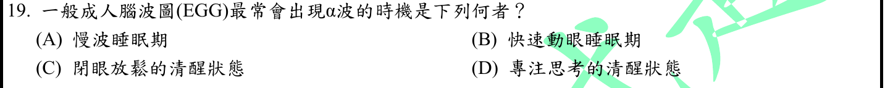
本地原卷PDF29 · 官方混科卷PDF29 · 官方原答案PDF1最下方生物表 · 已核對生物釋疑PDF3下方–5
官方採計：C 原答案：C
未列於本輪取得113生物釋疑PDF3下方至5；依同年度答案PDF1最下方生物表採計
主分類：Ch49 Nervous Systems
49.2 / Arousal and Sleep
目錄行3255；條目起始印刷頁1094；實際目錄 PDF48
主分類理由：49.2 / Arousal and Sleep：清醒與睡眠EEG型態比較屬覺醒與睡眠。
次分類理由：無另列最小次條目；原圖EGG保存並註正EEG；閉眼alpha使用Barry原始摘要補充，本地49.2覺醒睡眠最貼近，採C。不聲稱每位受試者或所有清醒條件均同。
科學說明：C。閉眼放鬆清醒較典型呈alpha活動，與深慢波睡眠及專注活動不同；原題把EEG印成EGG，原圖及文字原樣保留。Campbell提供腦波與睡眠基礎，閉眼alpha另用原始EEG研究補足，不由教材一般清醒圖直接捏造alpha頻帶標示。
來源涵蓋範圍：Campbell支援所列分類原理；具名物種地點、現代技術與科學界線由列示來源補足，實讀範圍見來源紀錄。
教材正文：印刷1093／PDF1142、印刷1094／PDF1143、印刷1095／PDF1144
補充來源：S07
另行比較：EGG原字是否該默改；教材泛稱醒覺腦波是否已證實alpha？
原圖EGG保存並註正EEG；閉眼alpha使用Barry原始摘要補充，本地49.2覺醒睡眠最貼近，採C。不聲稱每位受試者或所有清醒條件均同。
結論：證據確認，分類疑義已解決。完整覆核紀錄
Q20 · 8.3 / The Structure and Hydrolysis of ATP 正式分類
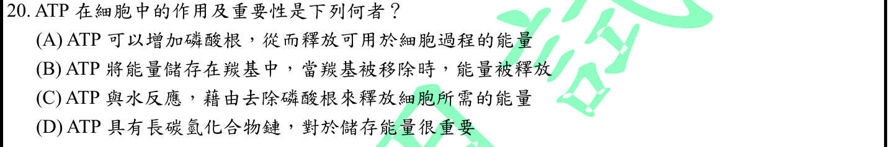
本地原卷PDF29 · 官方混科卷PDF29 · 官方原答案PDF1最下方生物表 · 已核對生物釋疑PDF3下方–5
官方採計：C 原答案：C
未列於本輪取得113生物釋疑PDF3下方至5；依同年度答案PDF1最下方生物表採計
主分類：Ch08 An Introduction to Metabolism
8.3 / The Structure and Hydrolysis of ATP
目錄行504；條目起始印刷頁150；實際目錄 PDF37
次分類：Ch08 An Introduction to Metabolism
8.3 / How ATP Provides Energy That Performs Work
目錄行507；條目起始印刷頁151；實際目錄 PDF37
主分類理由：8.3 / The Structure and Hydrolysis of ATP：題目直接考ATP水解及自由能變化。
次分類理由：8.3 / How ATP Provides Energy That Performs Work：細胞所需能量由水解與做功偶聯，保留ATP驅動細胞工作條目。
科學說明：C。ATP+水生成ADP與無機磷酸的總反應可釋放自由能，進而偶聯細胞做功；不是單獨斷裂化學鍵會放能。A加磷酸不是本題釋能步驟，B羰基與D長碳氫鏈均非ATP主要機制。
來源涵蓋範圍：Campbell正文支援分類原理；題目限定及來源措辭差異保留於科學說明。
教材正文：印刷150／PDF199、印刷151／PDF200、印刷152／PDF201
補充來源：本題未另列課本外來源
另行比較：去掉磷酸就是斷鍵放熱嗎；能否單靠ATP儲能口號分類？
對照反應前後自由能與偶聯，C需解成整個水解淨反應，分開單鍵解離成本。8.3兩個最小條目照存而章級只算一次。
結論：證據確認，分類疑義已解決。完整覆核紀錄
Q21 · 18.1 / Repressible and Inducible Operons: Two Types of Negative Gene Regulation 正式分類
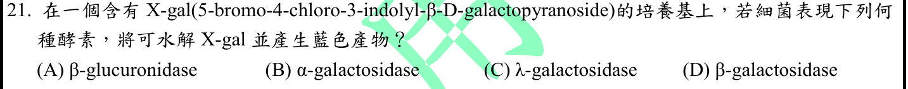
本地原卷PDF29 · 官方混科卷PDF29 · 官方原答案PDF1最下方生物表 · 已核對生物釋疑PDF3下方–5
官方採計：D 原答案：D
未列於本輪取得113生物釋疑PDF3下方至5；依同年度答案PDF1最下方生物表採計
主分類：Ch18 Regulation of Gene Expression
18.1 / Repressible and Inducible Operons: Two Types of Negative Gene Regulation
目錄行1110；條目起始印刷頁368；實際目錄 PDF39
次分類：Ch08 An Introduction to Metabolism
8.4 / Substrate Specificity of Enzymes
目錄行523；條目起始印刷頁155；實際目錄 PDF37
主分類理由：18.1 / Repressible and Inducible Operons: Two Types of Negative Gene Regulation：β-galactosidase為lac系統產物，酵素辨認與報導受質相連。
次分類理由：8.4 / Substrate Specificity of Enzymes：X-gal由正確糖苷酶催化，涉及酵素受質專一性。
科學說明：D。β-galactosidase裂解X-gal後形成藍色產物；不能將β改為α或λ，β-glucuronidase的受質不同。NEB文件確認特定酵素與X-gal關係；原題僅問顯色，未自行添加插入基因或藍白篩選實驗結果。
來源涵蓋範圍：Campbell支援所列分類原理；具名物種地點、現代技術與科學界線由列示來源補足，實讀範圍見來源紀錄。
教材正文：印刷155／PDF204、印刷156／PDF205、印刷368／PDF417、印刷369／PDF418
補充來源：S08
另行比較：與β-glucuronidase或α-galactosidase混淆；是否需套藍白篩選全部流程？
NEB官方特定受質確認β-galactosidase，D與答案一致。主lac酵素次酵素專一性，題幹未涉及插入片段判斷，不加DNA重組次目。
結論：證據確認，分類疑義已解決。完整覆核紀錄
Q22 · 7.4 / The Need for Energy in Active Transport 正式分類
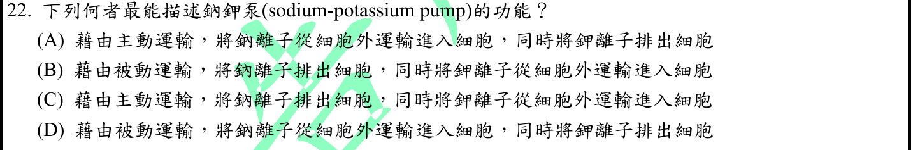
本地原卷PDF29 · 官方混科卷PDF29 · 官方原答案PDF1最下方生物表 · 已核對生物釋疑PDF3下方–5
官方採計：C 原答案：C
未列於本輪取得113生物釋疑PDF3下方至5；依同年度答案PDF1最下方生物表採計
主分類：Ch07 Membrane Structure and Function
7.4 / The Need for Energy in Active Transport
目錄行450；條目起始印刷頁136；實際目錄 PDF36
主分類理由：7.4 / The Need for Energy in Active Transport：鈉鉀泵逆梯度運輸且耗ATP，是主動運輸的典型。
次分類理由：無另列最小次條目；逐項讀A–D，只有C同時Na外K內及主動；教材泵循環圖與方向吻合。主動運輸最小目足夠，不因神經常用就主分神經系統。
科學說明：C。每循環通常輸出3Na+、輸入2K+，依賴ATP；A方向反，B／D誤稱被動。泵建立梯度，不等同每次動作電位快速上升期Na通道的被動內流。
來源涵蓋範圍：Campbell正文支援分類原理；題目限定及來源措辭差異保留於科學說明。
教材正文：印刷136／PDF185、印刷137／PDF186
補充來源：本題未另列課本外來源
另行比較：運輸方向與是否耗ATP可否同時滿足？
逐項讀A–D，只有C同時Na外K內及主動；教材泵循環圖與方向吻合。主動運輸最小目足夠，不因神經常用就主分神經系統。
結論：證據確認，分類疑義已解決。完整覆核紀錄
Q23 · 42.2 / Maintaining the Heart’s Rhythmic Beat 正式分類
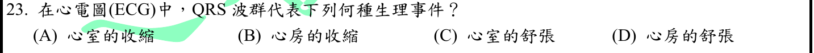
本地原卷PDF29 · 官方混科卷PDF29 · 官方原答案PDF1最下方生物表 · 已核對生物釋疑PDF3下方–5
官方採計：A 原答案：A
未列於本輪取得113生物釋疑PDF3下方至5；依同年度答案PDF1最下方生物表採計
主分類：Ch42 Circulation and Gas Exchange
42.2 / Maintaining the Heart’s Rhythmic Beat
文字目錄寫Rhythms；本輪實際PDF題名為Rhythmic Beat，文字來源保留。 目錄行2776；條目起始印刷頁928；實際目錄 PDF46
主分類理由：42.2 / Maintaining the Heart’s Rhythmic Beat：ECG與心臟傳導系統的節律直接對應心跳節律條目。
次分類理由：無另列最小次條目；本地心臟電傳導圖示提供去極化先於收縮，題目A是採計概括，兩者差異保留。目錄原Rhythms與PDF Rhythmic Beat已核對，無另造ECG目錄。
科學說明：官方A。QRS嚴格表示心室去極化，電事件先於並引發機械收縮；題目所有選項用收縮／舒張概括，故依採計選心室收縮，不能把QRS本身定義成肌肉縮短。L2776依真實PDF採Rhythmic Beat，保留文字目錄Rhythms差異。
來源涵蓋範圍：Campbell正文支援分類原理；題目限定及來源措辭差異保留於科學說明。
教材正文：印刷928／PDF977、印刷929／PDF978
補充來源：本題未另列課本外來源
另行比較：QRS電性事件可否直接等同心室收縮？
本地心臟電傳導圖示提供去極化先於收縮，題目A是採計概括，兩者差異保留。目錄原Rhythms與PDF Rhythmic Beat已核對，無另造ECG目錄。
結論：證據確認，分類疑義已解決。完整覆核紀錄
Q24 · 20.2 / Analyzing Gene Expression 正式分類
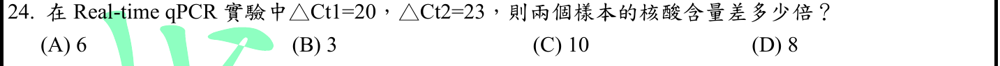
本地原卷PDF29 · 官方混科卷PDF29 · 官方原答案PDF1最下方生物表 · 已核對生物釋疑PDF3下方–5
官方採計：D 原答案：D
未列於本輪取得113生物釋疑PDF3下方至5；依同年度答案PDF1最下方生物表採計
主分類：Ch20 DNA Tools and Biotechnology
20.2 / Analyzing Gene Expression
目錄行1251；條目起始印刷頁423；實際目錄 PDF40
次分類：Ch20 DNA Tools and Biotechnology
20.1 / Amplifying DNA: The Polymerase Chain Reaction (PCR) and Its Use in DNA Cloning
目錄行1241；條目起始印刷頁420；實際目錄 PDF40
主分類理由：20.2 / Analyzing Gene Expression：Ct相對定量用以比較核酸／基因表現，主列分析基因表現。
次分類理由：20.1 / Amplifying DNA: The Polymerase Chain Reaction (PCR) and Its Use in DNA Cloning：循環擴增倍數由PCR原理支援，兩者同章仍分存。
科學說明：D。ΔΔCt=20−23=−3，2^(−ΔΔCt)=8，樣本1對2的相對量為8倍。須假設目標與參考擴增效率相容且近每循環加倍；若ΔCt已參考基因校正，算的是標準化相對量，不能無條件稱兩管總核酸量差8倍。
來源涵蓋範圍：Campbell支援所列分類原理；具名物種地點、現代技術與科學界線由列示來源補足，實讀範圍見來源紀錄。
教材正文：印刷420／PDF469、印刷421／PDF470、印刷423／PDF472、印刷424／PDF473、印刷425／PDF474
補充來源：S09
另行比較：三循環差是3、6還是8倍；是總量還是校正後相對量？
獨立用2^23/2^20=8交叉核算，樣本1相對較多；ΔCt含參考校正時需明列假設。20.2基因表現分析主、20.1PCR次符合最小題目，未把抽象數學作教材章。
結論：證據確認，分類疑義已解決。完整覆核紀錄
Q25 · 42.6 / How a Mammal Breathes 正式分類
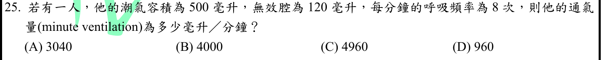
本地原卷PDF29 · 官方混科卷PDF29 · 官方原答案PDF1最下方生物表 · 釋疑PDF4
官方採計：A/B 原答案：A
同年度釋疑改為A/B皆可；依官方113組合包PDF37–38同一釋疑採計
主分類：Ch42 Circulation and Gas Exchange
42.6 / How a Mammal Breathes
目錄行2840；條目起始印刷頁945；實際目錄 PDF46
主分類理由：42.6 / How a Mammal Breathes：潮氣量、死腔與呼吸頻率決定通氣量，屬哺乳類通氣機制。
次分類理由：無另列最小次條目；重看Q25完整原圖，釋疑結果確為A/B。分別計算總4000、肺泡3040、死腔960且後兩項加回總量；官方採計與專有名詞差別都保留，分類仍為通氣機制。
科學說明：原A；釋疑改A/B皆可。按原題英文minute ventilation，總每分鐘通氣量500×8=4000（B）；肺泡通氣量(500−120)×8=3040（A）。960是死腔每分鐘通氣量，4960不符兩個定義。官方容許兩解不抹平專有名詞差異；功能餘氣量也不是每分鐘通氣量。
來源涵蓋範圍：Campbell正文支援分類原理；題目限定及來源措辭差異保留於科學說明。
教材正文：印刷945／PDF994、印刷946／PDF995
補充來源：本題未另列課本外來源
另行比較：原英文minute ventilation與無效腔資料造成兩種答案，如何分欄？
重看Q25完整原圖，釋疑結果確為A/B。分別計算總4000、肺泡3040、死腔960且後兩項加回總量；官方採計與專有名詞差別都保留，分類仍為通氣機制。
結論：證據確認，分類疑義已解決。完整覆核紀錄
Q26 · 6.4 / The Endomembrane System: A Review 正式分類
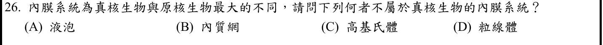
本地原卷PDF29 · 官方混科卷PDF29 · 官方原答案PDF1最下方生物表 · 已核對生物釋疑PDF3下方–5
官方採計：D 原答案：D
未列於本輪取得113生物釋疑PDF3下方至5；依同年度答案PDF1最下方生物表採計
主分類：Ch06 A Tour of the Cell
6.4 / The Endomembrane System: A Review
目錄行355；條目起始印刷頁108；實際目錄 PDF36
次分類：Ch06 A Tour of the Cell
6.5 / Mitochondria: Chemical Energy Conversion
目錄行365；條目起始印刷頁110；實際目錄 PDF36
主分類理由：6.4 / The Endomembrane System: A Review：比較各胞器是否屬endomembrane system，主列內膜系統總覽。
次分類理由：6.5 / Mitochondria: Chemical Energy Conversion：粒線體雙層膜與獨立能量轉換區隔需保留粒線體條目。
科學說明：D。液泡、ER與Golgi屬內膜系統，粒線體不屬之。是否屬內膜系統依功能與囊泡聯繫判定，不能用單層／雙層膜粗分，因核膜也是內膜系統組件。
來源涵蓋範圍：Campbell正文支援分類原理；題目限定及來源措辭差異保留於科學說明。
教材正文：印刷108／PDF157、印刷109／PDF158、印刷110／PDF159
補充來源：本題未另列課本外來源
另行比較：粒線體也有膜，是否就屬內膜系統；核膜雙層是否構成反例？
內膜系統按功能聯繫定義而非膜數，D排除粒線體；本地6.4總覽與6.5粒線體主次配對，其他選項有明確內膜身分。
結論：證據確認，分類疑義已解決。完整覆核紀錄
Q27 · 50.5 / Vertebrate Skeletal Muscle 正式分類
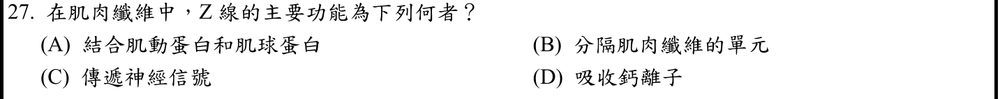
本地原卷PDF30 · 官方混科卷PDF30 · 官方原答案PDF1最下方生物表 · 已核對生物釋疑PDF3下方–5
官方採計：B 原答案：B
未列於本輪取得113生物釋疑PDF3下方至5；依同年度答案PDF1最下方生物表採計
主分類：Ch50 Sensory and Motor Mechanisms
50.5 / Vertebrate Skeletal Muscle
目錄行3381；條目起始印刷頁1126；實際目錄 PDF49
主分類理由：50.5 / Vertebrate Skeletal Muscle：Z線是肌小節邊界及細肌絲錨定位置，屬骨骼肌絲構造。
次分類理由：無另列最小次條目；教材Z線界定sarcomere並錨定細肌絲，B按此理解可採。原題不精確稱謂保留，未將Z線說成細胞膜或讓myosin直接錨在Z線。
科學說明：B。題寫「分隔肌肉纖維的單元」應解作界定肌原纖維的肌小節，非把整條肌纖維細胞分開。Z線主要錨定actin細肌絲，不是actin與myosin兩類肌絲共同直接結合的通稱；Ca主要由肌漿網調節。
來源涵蓋範圍：Campbell正文支援分類原理；題目限定及來源措辭差異保留於科學說明。
教材正文：印刷1126／PDF1175、印刷1127／PDF1176
補充來源：本題未另列課本外來源
另行比較：B的單元是肌纖維細胞還是肌小節，A兩類肌絲是否都錨在Z線？
教材Z線界定sarcomere並錨定細肌絲，B按此理解可採。原題不精確稱謂保留，未將Z線說成細胞膜或讓myosin直接錨在Z線。
結論：證據確認，分類疑義已解決。完整覆核紀錄
Q28 · 3.2 / Moderation of Temperature by Water 正式分類
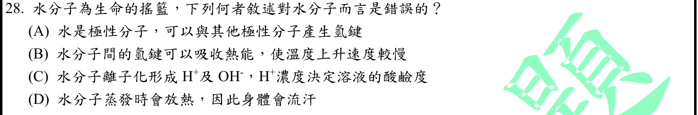
本地原卷PDF30 · 官方混科卷PDF30 · 官方原答案PDF1最下方生物表 · 已核對生物釋疑PDF3下方–5
官方採計：D 原答案：D
未列於本輪取得113生物釋疑PDF3下方至5；依同年度答案PDF1最下方生物表採計
主分類：Ch03 Water and Life
3.2 / Moderation of Temperature by Water
目錄行159；條目起始印刷頁46；實際目錄 PDF35
主分類理由：3.2 / Moderation of Temperature by Water：錯誤選項關於蒸發吸熱與降溫，最小目錄為水調節溫度。
次分類理由：無另列最小次條目；完整四選項與47蒸發冷卻比對：D把蒸發放熱顛倒，A–C為題設基礎。主目集中決定錯項的溫度調節，未把所有選項都堆入次目。
科學說明：D。蒸發需要吸收能量，較高動能分子離開後剩餘液體冷卻，所以汗蒸發可散熱。斷開水間氫鍵吸熱，高比熱減緩升溫；極性、氫鍵及H+／OH−支持其餘基礎敘述。不是汗水形成或滴落必然有等量蒸發冷卻。
來源涵蓋範圍：Campbell正文支援分類原理；題目限定及來源措辭差異保留於科學說明。
教材正文：印刷45／PDF94、印刷46／PDF95、印刷47／PDF96、印刷48／PDF97、印刷51／PDF100
補充來源：本題未另列課本外來源
另行比較：氫鍵吸熱與蒸發散熱的方向有無相反？
完整四選項與47蒸發冷卻比對：D把蒸發放熱顛倒，A–C為題設基礎。主目集中決定錯項的溫度調節，未把所有選項都堆入次目。
結論：證據確認，分類疑義已解決。完整覆核紀錄
Q29 · 43.2 / B Cell and T Cell Development 正式分類
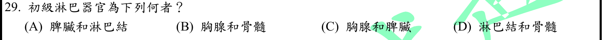
本地原卷PDF30 · 官方混科卷PDF30 · 官方原答案PDF1最下方生物表 · 已核對生物釋疑PDF3下方–5
官方採計：B 原答案：B
未列於本輪取得113生物釋疑PDF3下方至5；依同年度答案PDF1最下方生物表採計
主分類：Ch43 The Immune System
43.2 / B Cell and T Cell Development
目錄行2889；條目起始印刷頁960；實際目錄 PDF47
主分類理由：43.2 / B Cell and T Cell Development：初級淋巴器官為B/T細胞發生與成熟場所，對應B/T細胞發展。
次分類理由：無另列最小次條目；骨髓與胸腺提供B/T細胞成熟與耐受，958與961跨頁證據相互支持。淋巴結／脾反應位置為對照而非本題成熟主題，B確定且無須新增循環次章。
科學說明：B。人類B細胞在骨髓、T細胞在胸腺成熟；本地958明列來源，960–961說明成熟與自我耐受。脾與淋巴結是周邊免疫反應的重要場所，不能把它們混列為初級器官。
來源涵蓋範圍：Campbell正文支援分類原理；題目限定及來源措辭差異保留於科學說明。
教材正文：印刷957／PDF1006、印刷958／PDF1007、印刷960／PDF1009、印刷961／PDF1010
補充來源：本題未另列課本外來源
另行比較：器官類型應主分類免疫細胞成熟或淋巴循環？
骨髓與胸腺提供B/T細胞成熟與耐受，958與961跨頁證據相互支持。淋巴結／脾反應位置為對照而非本題成熟主題，B確定且無須新增循環次章。
結論：證據確認，分類疑義已解決。完整覆核紀錄
Q30 · 10.3 / Linear Electron Flow 正式分類
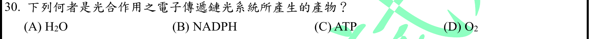
本地原卷PDF30 · 官方混科卷PDF30 · 官方原答案PDF1最下方生物表 · 釋疑PDF4、釋疑PDF5
官方採計：B/C/D 原答案：D
同年度釋疑改為B/C/D皆可；依官方113組合包PDF37–38同一釋疑採計
主分類：Ch10 Photosynthesis
10.3 / Linear Electron Flow
目錄行656；條目起始印刷頁197；實際目錄 PDF37
次分類：Ch10 Photosynthesis
10.3 / A Comparison of Chemiosmosis in Chloroplasts and Mitochondria
目錄行662；條目起始印刷頁199；實際目錄 PDF37
主分類理由：10.3 / Linear Electron Flow：光系統與光反應產物來自線性電子流，主列該路徑。
次分類理由：10.3 / A Comparison of Chemiosmosis in Chloroplasts and Mitochondria：ATP經質子梯度與ATP合成酶產生，保留葉綠體化學滲透。
科學說明：原D；釋疑改B/C/D皆可。光反應含水氧化放O2、末端還原NADP+成NADPH，以及梯度驅動ATP形成；H2O為電子來源而非此流程淨產物。直接／間接與整個光反應範圍是爭點；官方「將光能轉換為電子」不可照抄為物質生成，光是激發既有電子。
來源涵蓋範圍：Campbell正文支援分類原理；題目限定及來源措辭差異保留於科學說明。
教材正文：印刷195／PDF244、印刷196／PDF245、印刷197／PDF246、印刷198／PDF247、印刷199／PDF248、印刷200／PDF249
補充來源：本題未另列課本外來源
另行比較：只有O2是產物，或ATP與NADPH也在問題範圍？
重看完整Q30化學下標、官方跨PDF4–5理由與結果。按未限直接間接的光反應範圍採B/C/D；線性電子流及chemiosmosis同章次目皆需保存，光能激發電子的物理界線另註。
結論：證據確認，分類疑義已解決。完整覆核紀錄
Q31 · 50.4 / Smell in Humans 正式分類
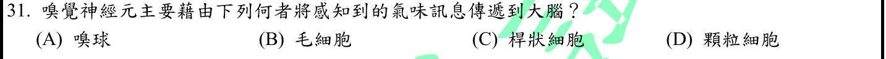
本地原卷PDF30 · 官方混科卷PDF30 · 官方原答案PDF1最下方生物表 · 已核對生物釋疑PDF3下方–5
官方採計：A 原答案：A
未列於本輪取得113生物釋疑PDF3下方至5；依同年度答案PDF1最下方生物表採計
主分類：Ch50 Sensory and Motor Mechanisms
50.4 / Smell in Humans
目錄行3374；條目起始印刷頁1124；實際目錄 PDF49
主分類理由：50.4 / Smell in Humans：嗅覺受器至嗅球的訊息路徑屬嗅覺。
次分類理由：無另列最小次條目；嗅球是結構層級的主要中繼，顆粒細胞為局部迴路細胞，非同義。教材嗅覺通路支持A，感覺受器比較不需要加視覺或聽覺次目。
科學說明：A。嗅覺神經元軸突先投射嗅球，再由相關神經元傳向嗅覺皮質。顆粒細胞可存在嗅球局部迴路，不宜說與嗅球完全無關；但不是此題問的主要中繼構造。毛細胞、桿狀細胞分屬其他感覺。
來源涵蓋範圍：Campbell正文支援分類原理；題目限定及來源措辭差異保留於科學說明。
教材正文：印刷1124／PDF1173、印刷1125／PDF1174
補充來源：本題未另列課本外來源
另行比較：嗅球內也有granule cells，是否使D成同義？
嗅球是結構層級的主要中繼，顆粒細胞為局部迴路細胞，非同義。教材嗅覺通路支持A，感覺受器比較不需要加視覺或聽覺次目。
結論：證據確認，分類疑義已解決。完整覆核紀錄
Q32 · 45.2 / Coordination of the Endocrine and Nervous Systems 正式分類
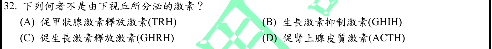
本地原卷PDF30 · 官方混科卷PDF30 · 官方原答案PDF1最下方生物表 · 已核對生物釋疑PDF3下方–5
官方採計：D 原答案：D
未列於本輪取得113生物釋疑PDF3下方至5；依同年度答案PDF1最下方生物表採計
主分類：Ch45 Hormones and the Endocrine System
45.2 / Coordination of the Endocrine and Nervous Systems
目錄行3023；條目起始印刷頁1006；實際目錄 PDF47
次分類：Ch45 Hormones and the Endocrine System
45.3 / Adrenal Hormones: Response to Stress
目錄行3039；條目起始印刷頁1012；實際目錄 PDF47
主分類理由：45.2 / Coordination of the Endocrine and Nervous Systems：辨認下視丘與腦垂腺激素來源，屬神經與內分泌協調。
次分類理由：45.3 / Adrenal Hormones: Response to Stress：ACTH作用於腎上腺皮質，保留其靶腺軸。
科學說明：D。ACTH由腦垂腺前葉分泌，受下視丘CRH調控；TRH與GHRH是釋放激素，GHIH即生長抑素是下視丘抑制訊號。本地1007–1009及1012提供來源與軸，不把下視丘的調控作用誤認成ACTH由其製造。
來源涵蓋範圍：Campbell正文支援分類原理；題目限定及來源措辭差異保留於科學說明。
教材正文：印刷1006／PDF1055、印刷1007／PDF1056、印刷1008／PDF1057、印刷1009／PDF1058、印刷1012／PDF1061、印刷1013／PDF1062
補充來源：本題未另列課本外來源
另行比較：下視丘控制ACTH是否代表ACTH由下視丘分泌？
逐核四種激素與hypothalamus／anterior pituitary分工，ACTH在前葉且連結adrenal cortex；D明確。主神經內分泌協調與次腎上腺皆位於45章，最小次目保存。
結論：證據確認，分類疑義已解決。完整覆核紀錄
Q33 · 1.1 / Theme: Life’s Processes Involve the Expression and Transmission of Genetic Information 正式分類
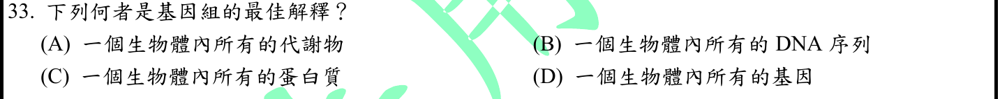
本地原卷PDF30 · 官方混科卷PDF30 · 官方原答案PDF1最下方生物表 · 釋疑PDF5
官方採計：B 原答案：B
同年度釋疑維持原答案B
主分類：Ch01 Evolution, the Themes of Biology, and Scientific Inquiry
1.1 / Theme: Life’s Processes Involve the Expression and Transmission of Genetic Information
目錄行12；條目起始印刷頁6；實際目錄 PDF35
次分類：Ch21 Genomes and Their Evolution
21.3 / Gene Density and Noncoding DNA
目錄行1320；條目起始印刷頁449；實際目錄 PDF40
主分類理由：1.1 / Theme: Life’s Processes Involve the Expression and Transmission of Genetic Information：問題是genome基本定義，最小目錄以遺傳資訊主題的全套DNA敘述直接回答。
次分類理由：21.3 / Gene Density and Noncoding DNA：基因密度與非編碼DNA排除只有基因的D選項。
科學說明：B，釋疑維持。基因組包括全套DNA序列，包含基因及非編碼區；代謝物與蛋白質分屬其他層次。「所有基因」不涵蓋全基因組，且基因也不只蛋白編碼基因。官方引第21章，本地主定義在第1章、次列21.3，保留引用範圍差異。
來源涵蓋範圍：Campbell正文支援分類原理；題目限定及來源措辭差異保留於科學說明。
教材正文：印刷6／PDF55、印刷7／PDF56、印刷8／PDF57、印刷449／PDF498、印刷450／PDF499、印刷451／PDF500
補充來源：本題未另列課本外來源
另行比較：genome是genes總集還是全DNA；官方21章如何映射本地目錄？
同年釋疑維持B，1章定義支持主目，21.3非編碼DNA直接排除D。初稿泛用genomics改採精確Gene Density and Noncoding DNA次目，完整來源差異不掩蓋。
結論：證據確認，分類疑義已解決。完整覆核紀錄
Q34 · 26.1 / Binomial Nomenclature 正式分類
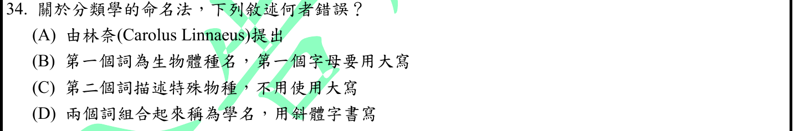
本地原卷PDF30 · 官方混科卷PDF30 · 官方原答案PDF1最下方生物表 · 已核對生物釋疑PDF3下方–5
官方採計：B 原答案：B
未列於本輪取得113生物釋疑PDF3下方至5；依同年度答案PDF1最下方生物表採計
主分類：Ch26 Phylogeny and the Tree of Life
26.1 / Binomial Nomenclature
目錄行1627；條目起始印刷頁554；實際目錄 PDF42
主分類理由：26.1 / Binomial Nomenclature：雙名法的屬名、種小名與字體規則是命名基本原則。
次分類理由：無另列最小次條目；對照二名法段落，B把屬名誤稱種名；第二詞種小名不可獨立當完整學名。26.1 Binomial Nomenclature是現存最小條目，無需泛列整章系統分類。
科學說明：B。第一詞是屬名且首字大寫，第二詞為種小名且小寫；兩詞合成物種學名並常用斜體。原文「第二個詞描述特殊物種」較鬆散，不能把種小名單獨當完整二名學名。
來源涵蓋範圍：Campbell正文支援分類原理；題目限定及來源措辭差異保留於科學說明。
教材正文：印刷554／PDF603、印刷555／PDF604
補充來源：本題未另列課本外來源
另行比較：第一詞種名／屬名混淆，第二詞是否單獨是完整學名？
對照二名法段落，B把屬名誤稱種名；第二詞種小名不可獨立當完整學名。26.1 Binomial Nomenclature是現存最小條目，無需泛列整章系統分類。
結論：證據確認，分類疑義已解決。完整覆核紀錄
Q35 · 6.2 / Comparing Prokaryotic and Eukaryotic Cells 正式分類
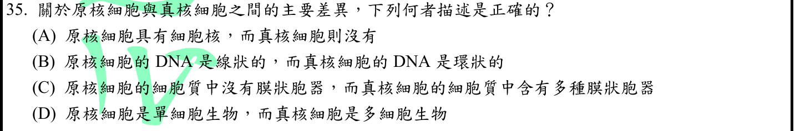
本地原卷PDF30 · 官方混科卷PDF30 · 官方原答案PDF1最下方生物表 · 已核對生物釋疑PDF3下方–5
官方採計：C 原答案：C
未列於本輪取得113生物釋疑PDF3下方至5；依同年度答案PDF1最下方生物表採計
主分類：Ch06 A Tour of the Cell
6.2 / Comparing Prokaryotic and Eukaryotic Cells
目錄行323；條目起始印刷頁97；實際目錄 PDF36
主分類理由：6.2 / Comparing Prokaryotic and Eukaryotic Cells：比較原核與真核的核及膜胞器結構，屬兩類細胞比較。
次分類理由：無另列最小次條目；教材原核與真核比較支持典型C並保留非絕對限定，A/B方向顛倒，D錯誤。分類定錨比較細胞條目，沒有因題文概括而隱藏此題。
科學說明：官方C符合典型教科書比較：真核具膜包圍的核與多種膜胞器；A顛倒，B顛倒典型染色體，D忽略單細胞真核生物。Campbell98說原核細胞質幾乎都無膜胞器（almost all），題目C絕對措辭保留，未擴寫成所有原核DNA必為環狀。
來源涵蓋範圍：Campbell正文支援分類原理；題目限定及來源措辭差異保留於科學說明。
教材正文：印刷97／PDF146、印刷98／PDF147、印刷99／PDF148
補充來源：本題未另列課本外來源
另行比較：C絕對寫法與教材almost all不同，D是否忽略單細胞真核？
教材原核與真核比較支持典型C並保留非絕對限定，A/B方向顛倒，D錯誤。分類定錨比較細胞條目，沒有因題文概括而隱藏此題。
結論：證據確認，分類疑義已解決。完整覆核紀錄
Q36 · 49.5 / Alzheimer’s Disease 正式分類
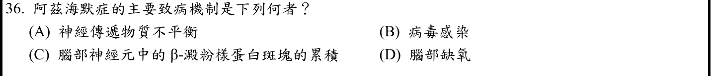
本地原卷PDF30 · 官方混科卷PDF30 · 官方原答案PDF1最下方生物表 · 已核對生物釋疑PDF3下方–5
官方採計：C 原答案：C
未列於本輪取得113生物釋疑PDF3下方至5；依同年度答案PDF1最下方生物表採計
主分類：Ch49 Nervous Systems
49.5 / Alzheimer’s Disease
目錄行3312；條目起始印刷頁1103；實際目錄 PDF48
主分類理由：49.5 / Alzheimer’s Disease：題目指名Alzheimer病理，最小目錄已有阿茲海默症。
次分類理由：無另列最小次條目；再次看原圖確認「中」字，1104把Aβ斑塊定位細胞外、tau纏結在內；科學差異已具體解決為位置錯述並保留官方C。疾病最小條目確定，不靠改狀態消除衝突。
科學說明：官方C。Aβ斑塊是疾病重要病理，但本地1104明確寫神經元外的amyloid plaques，細胞內主要為tau神經纖維纏結；原題「腦部神經元中的」位置不精確。疾病機制亦非單一斑塊足以概括，保留官方採C及科學位置差異。
來源涵蓋範圍：Campbell正文支援分類原理；題目限定及來源措辭差異保留於科學說明。
教材正文：印刷1103／PDF1152、印刷1104／PDF1153
補充來源：本題未另列課本外來源
另行比較：題寫神經元中Aβ plaque，與正文outside neurons是否衝突？
再次看原圖確認「中」字，1104把Aβ斑塊定位細胞外、tau纏結在內；科學差異已具體解決為位置錯述並保留官方C。疾病最小條目確定，不靠改狀態消除衝突。
結論：證據確認，分類疑義已解決。完整覆核紀錄
Q37 · 34.7 / Homo sapiens 正式分類
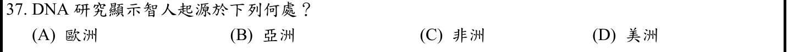
本地原卷PDF31 · 官方混科卷PDF31 · 官方原答案PDF1最下方生物表 · 已核對生物釋疑PDF3下方–5
官方採計：C 原答案：C
未列於本輪取得113生物釋疑PDF3下方至5；依同年度答案PDF1最下方生物表採計
主分類：Ch34 The Origin and Evolution of Vertebrates
34.7 / Homo sapiens
目錄行2265；條目起始印刷頁753；實際目錄 PDF44
主分類理由：34.7 / Homo sapiens：智人起源屬Homo sapiens演化條目，非泛稱所有靈長類。
次分類理由：無另列最小次條目；只按題目的洲級對比及Homo sapiens正文選非洲C；未外推單一發源點，主目Homo sapiens合適且無其他最小次項必要。
科學說明：C。Campbell753–755的化石與DNA證據支援智人在非洲起源；本題只比較洲別，不由此推定唯一確切地點，也不把其他早期人屬遷徙當作現代智人的同一事件。
來源涵蓋範圍：Campbell正文支援分類原理；題目限定及來源措辭差異保留於科學說明。
教材正文：印刷753／PDF802、印刷754／PDF803、印刷755／PDF804
補充來源：本題未另列課本外來源
另行比較：DNA研究的智人起源能否換成所有人屬遷移或唯一地點？
只按題目的洲級對比及Homo sapiens正文選非洲C；未外推單一發源點，主目Homo sapiens合適且無其他最小次項必要。
結論：證據確認，分類疑義已解決。完整覆核紀錄
Q38 · 38.1 / Seed Development and Structure 正式分類
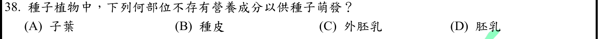
本地原卷PDF31 · 官方混科卷PDF31 · 官方原答案PDF1最下方生物表 · 已核對生物釋疑PDF3下方–5
官方採計：B 原答案：B
未列於本輪取得113生物釋疑PDF3下方至5；依同年度答案PDF1最下方生物表採計
主分類：Ch38 Angiosperm Reproduction and Biotechnology
38.1 / Seed Development and Structure
目錄行2495；條目起始印刷頁828；實際目錄 PDF45
主分類理由：38.1 / Seed Development and Structure：種皮與營養儲藏組織比較屬種子發育構造。
次分類理由：無另列最小次條目；藜麥原始研究證實perisperm儲藏澱粉，C可供萌發；B按成熟種子主要功能為保護。Campbell與課外物種證據分開，種皮絕不含營養的過度表述保留界線。
科學說明：B是通常的功能分類：種皮主要保護，子葉與胚乳可儲藏養分，某些種子也由外胚乳（珠心來源）儲藏。補充藜麥原始研究證實外胚乳澱粉；原題「不存有營養成分」不應解成任何發育階段的種皮絕不含營養物質。
來源涵蓋範圍：Campbell支援所列分類原理；具名物種地點、現代技術與科學界線由列示來源補足，實讀範圍見來源紀錄。
教材正文：印刷828／PDF877、印刷829／PDF878、印刷830／PDF879
補充來源：S10
另行比較：教材沒有外胚乳詳解，是否能直接把C判為不存在？
藜麥原始研究證實perisperm儲藏澱粉，C可供萌發；B按成熟種子主要功能為保護。Campbell與課外物種證據分開，種皮絕不含營養的過度表述保留界線。
結論：證據確認，分類疑義已解決。完整覆核紀錄
Q39 · 36.4 / Stimuli for Stomatal Opening and Closing 正式分類
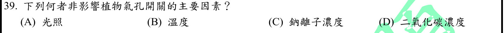
本地原卷PDF31 · 官方混科卷PDF31 · 官方原答案PDF1最下方生物表 · 已核對生物釋疑PDF3下方–5
官方採計：C 原答案：C
未列於本輪取得113生物釋疑PDF3下方至5；依同年度答案PDF1最下方生物表採計
主分類：Ch36 Resource Acquisition and Transport in Vascular Plants
36.4 / Stimuli for Stomatal Opening and Closing
目錄行2397；條目起始印刷頁798；實際目錄 PDF45
次分類：Ch36 Resource Acquisition and Transport in Vascular Plants
36.4 / Mechanisms of Stomatal Opening and Closing
目錄行2394；條目起始印刷頁797；實際目錄 PDF45
主分類理由：36.4 / Stimuli for Stomatal Opening and Closing：比較光、CO2與環境刺激對氣孔的調控，主列氣孔開閉刺激。
次分類理由：36.4 / Mechanisms of Stomatal Opening and Closing：保衛細胞K+移動與膨壓是區別Na+選項的機制。
科學說明：C。典型氣孔調控主要涉及光、CO2、溫度／水分狀態及保衛細胞K+等滲透溶質。不是說Na+或鹽逆境對植物氣孔完全沒有影響，而是題列Na+濃度非一般主要調控因素。
來源涵蓋範圍：Campbell正文支援分類原理；題目限定及來源措辭差異保留於科學說明。
教材正文：印刷797／PDF846、印刷798／PDF847、印刷799／PDF848
補充來源：本題未另列課本外來源
另行比較：Na鹽害也會關氣孔，C能否被概括成完全無作用？
題問主要因素，教材刺激段與K+滲透機制支持C為相對不典型；未否認鹽逆境。36.4兩個最小葉項分存，章級每題36只計一次。
結論：證據確認，分類疑義已解決。完整覆核紀錄
Q40 · 38.1 / Development of Female Gametophytes (Embryo Sacs) 正式分類
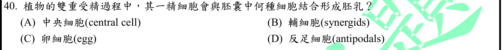
本地原卷PDF31 · 官方混科卷PDF31 · 官方原答案PDF1最下方生物表 · 已核對生物釋疑PDF3下方–5
官方採計：A 原答案：A
未列於本輪取得113生物釋疑PDF3下方至5；依同年度答案PDF1最下方生物表採計
主分類：Ch38 Angiosperm Reproduction and Biotechnology
38.1 / Development of Female Gametophytes (Embryo Sacs)
目錄行2489；條目起始印刷頁826；實際目錄 PDF45
次分類：Ch38 Angiosperm Reproduction and Biotechnology
38.1 / Seed Development and Structure
目錄行2495；條目起始印刷頁828；實際目錄 PDF45
主分類理由：38.1 / Development of Female Gametophytes (Embryo Sacs)：精細胞結合的目標取決於胚囊中央細胞與極核構造，主列雌配子體發育。
次分類理由：38.1 / Seed Development and Structure：中央細胞受精後形成胚乳，需保留種子發育構造條目。
科學說明：A。典型胚囊中央細胞含兩個極核，與一精核融合形成通常3n的初生胚乳核；卵細胞與另一精細胞形成合子。輔細胞協助導引花粉管，反足細胞不是胚乳來源。最小真實目錄無獨立Double Fertilization葉項，不能以正文小標虛造TOC。
來源涵蓋範圍：Campbell正文支援分類原理；題目限定及來源措辭差異保留於科學說明。
教材正文：印刷826／PDF875、印刷827／PDF876、印刷828／PDF877
補充來源：本題未另列課本外來源
另行比較：中央細胞、卵、輔細胞與反足細胞的命運是否對應正確？
826胚囊結構與827圖核對，另一精核入中央細胞，828胚乳發育延續。主雌配子體、次種子發育有各自證據；不把正文Double Fertilization小標冒作TOC最小條目。
結論：證據確認，分類疑義已解決。完整覆核紀錄
Q41 · 44.2 / Forms of Nitrogenous Waste 正式分類
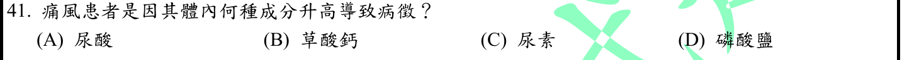
本地原卷PDF31 · 官方混科卷PDF31 · 官方原答案PDF1最下方生物表 · 已核對生物釋疑PDF3下方–5
官方採計：A 原答案：A
未列於本輪取得113生物釋疑PDF3下方至5；依同年度答案PDF1最下方生物表採計
主分類：Ch44 Osmoregulation and Excretion
44.2 / Forms of Nitrogenous Waste
目錄行2957；條目起始印刷頁982；實際目錄 PDF47
主分類理由：44.2 / Forms of Nitrogenous Waste：尿酸是含氮廢物之一，需與尿素等代謝終產物區別。
次分類理由：無另列最小次條目；NIAMS指出尿酸鹽晶體與發炎且高尿酸未必痛風，A採計及科學邊界相容。主含氮廢物，教材未載疾病細節的限制已記，不新增虛構Gout目錄。
科學說明：A。尿酸鹽長期升高及晶體沉積可造成關節發炎，並非所有高尿酸者必有痛風；草酸鈣與尿素等不是此題主要致病結晶。Campbell982支援尿酸廢物分類，疾病細節另由NIAMS核對，不冒稱教材該段完整論痛風。
來源涵蓋範圍：Campbell支援所列分類原理；具名物種地點、現代技術與科學界線由列示來源補足，實讀範圍見來源紀錄。
教材正文：印刷982／PDF1031、印刷983／PDF1032
補充來源：S11
另行比較：尿酸濃度高可否直接等同每人有症狀，與草酸鈣混淆？
NIAMS指出尿酸鹽晶體與發炎且高尿酸未必痛風，A採計及科學邊界相容。主含氮廢物，教材未載疾病細節的限制已記，不新增虛構Gout目錄。
結論：證據確認，分類疑義已解決。完整覆核紀錄
Q42 · 9.4 / An Accounting of ATP Production by Cellular Respiration 正式分類
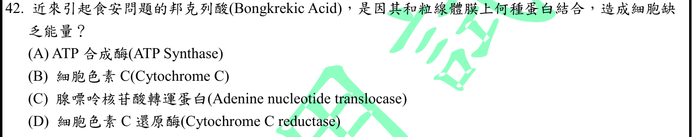
本地原卷PDF31 · 官方混科卷PDF31 · 官方原答案PDF1最下方生物表 · 已核對生物釋疑PDF3下方–5
官方採計：C 原答案：C
未列於本輪取得113生物釋疑PDF3下方至5；依同年度答案PDF1最下方生物表採計
主分類：Ch09 Cellular Respiration and Fermentation
9.4 / An Accounting of ATP Production by Cellular Respiration
目錄行588；條目起始印刷頁177；實際目錄 PDF37
次分類：Ch06 A Tour of the Cell
6.5 / Mitochondria: Chemical Energy Conversion
目錄行365；條目起始印刷頁110；實際目錄 PDF36
主分類理由：9.4 / An Accounting of ATP Production by Cellular Respiration：細胞呼吸產生的ATP需輸出胞質才供能；ATP產額條目178明列輸出成本，最貼近本題能量與轉運問題。
次分類理由：6.5 / Mitochondria: Chemical Energy Conversion：粒線體內膜／基質區隔支援ANT交換的位置。
科學說明：C。邦克列酸直接結合ANT（ADP/ATP carrier），阻止胞質ADP入基質與ATP外輸；不是直接結合ATP synthase、cytochrome c或complex III。Campbell110與177–178僅提供區隔及ATP輸出原理，毒素標的由Cell原始研究摘要證實。ANT利用電化學條件交換核苷酸，不能誤分類成自身水解ATP的鈉鉀型泵。
來源涵蓋範圍：Campbell支援所列分類原理；具名物種地點、現代技術與科學界線由列示來源補足，實讀範圍見來源紀錄。
教材正文：印刷110／PDF159、印刷175／PDF224、印刷176／PDF225、印刷177／PDF226、印刷178／PDF227
補充來源：S12
另行比較：邦克列酸標的是否ATP合成酶；是否把ANT當耗ATP的主動泵？
原始Cell摘要直接寫bongkrekic acid鎖ADP/ATP carrier，確定C。改以粒線體構造作次目，排除初稿一般ATP驅動泵的錯誤暗示；主9.4產額條目有ATP輸出成本，毒素特異性只由補充研究承擔。
結論：證據確認，分類疑義已解決。完整覆核紀錄
Q43 · 45.3 / Hormones and Biological Rhythms 正式分類
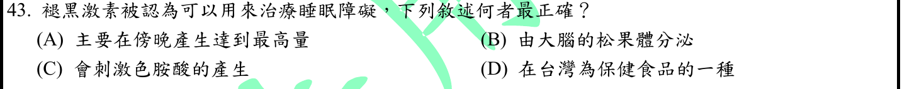
本地原卷PDF31 · 官方混科卷PDF31 · 官方原答案PDF1最下方生物表 · 釋疑PDF5
官方採計：B 原答案：B
同年度釋疑維持原答案B
主分類：Ch45 Hormones and the Endocrine System
45.3 / Hormones and Biological Rhythms
目錄行3045；條目起始印刷頁1015；實際目錄 PDF47
次分類：Ch49 Nervous Systems
49.2 / The vertebrate brain is regionally specialized
目錄行3251；條目起始印刷頁1091；實際目錄 PDF48
主分類理由：45.3 / Hormones and Biological Rhythms：松果體褪黑激素調節生理節律，主列褪黑激素條目。
次分類理由：49.2 / The vertebrate brain is regionally specialized：松果體屬間腦上視丘區，需保留腦區的精確定位。
科學說明：B，釋疑維持。松果體分泌melatonin，夜間通常較多；「大腦」是題目與釋疑廣義用法，解剖上屬間腦上視丘，不是端腦皮質。非傍晚必達最高、也非刺激色胺酸生成；食藥署2023資料說產品按藥品列管，不能當臺灣一般保健食品。治療睡眠障礙的題首敘述不等於療效已普遍確立。
來源涵蓋範圍：Campbell支援所列分類原理；具名物種地點、現代技術與科學界線由列示來源補足，實讀範圍見來源紀錄。
教材正文：印刷1015／PDF1064、印刷1016／PDF1065、印刷1091／PDF1140、印刷1092／PDF1141、印刷1093／PDF1142、印刷1094／PDF1143
補充來源：S13
另行比較：松果體在端腦還是間腦，官方廣義大腦和科學定義如何並存？
釋疑43主動說明泛稱與精確部位，採B而正文保留間腦上視丘。2023食藥署條目核對D，未將睡眠治療題首概括當成療效保證；主節律次真實49.2定位。
結論：證據確認，分類疑義已解決。完整覆核紀錄
Q44 · 11.3 / Small Molecules and Ions as Second Messengers 正式分類
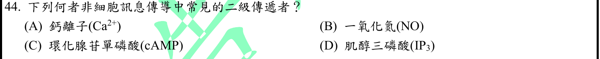
本地原卷PDF31 · 官方混科卷PDF31 · 官方原答案PDF1最下方生物表 · 已核對生物釋疑PDF3下方–5
官方採計：B 原答案：B
未列於本輪取得113生物釋疑PDF3下方至5；依同年度答案PDF1最下方生物表採計
主分類：Ch11 Cell Communication
11.3 / Small Molecules and Ions as Second Messengers
文字目錄漏and Ions；本輪實際PDF題名對照，保留文字來源差異。 目錄行724；條目起始印刷頁223；實際目錄 PDF38
次分類：Ch45 Hormones and the Endocrine System
45.1 / Intercellular Information Flow
目錄行2998；條目起始印刷頁1000；實際目錄 PDF47
主分類理由：11.3 / Small Molecules and Ions as Second Messengers：Ca2+、cAMP、IP3是教材典型小分子／離子第二傳訊者，直接對應該最小條目。
次分類理由：45.1 / Intercellular Information Flow：NO可擴散至鄰細胞作用，補充細胞間局部訊息與細胞內接續反應的界線。
科學說明：官方B。Campbell223–225列典型cAMP、Ca2+、IP3，並以NO由鄰細胞而來、活化guanylyl cyclase產cGMP說明。本題問「常見」依此框架選B；NO也有受體下游合成及細胞內訊息作用，不能說它在任何定義或迴路都不可能扮演第二訊息角色。保留分類慣例與來源界線，未擅改採計。
來源涵蓋範圍：Campbell支援所列分類原理；具名物種地點、現代技術與科學界線由列示來源補足，實讀範圍見來源紀錄。
教材正文：印刷217／PDF266、印刷218／PDF267、印刷223／PDF272、印刷224／PDF273、印刷225／PDF274、印刷1000／PDF1049、印刷1001／PDF1050
補充來源：S14
另行比較：NO可在受體下游產生，是否能說它永非第二訊息？
重看Q44關鍵字「常見」，Campbell標準列舉與NO→cGMP框架可解官方B；1989原始研究確立NO的實際受體下游角色，故保留定義／情境界線。分類11.3與45.1各有證據，並未篡改答案。
結論：證據確認，分類疑義已解決。完整覆核紀錄
Q45 · 50.2 / Sensing of Gravity and Sound in Invertebrates 正式分類
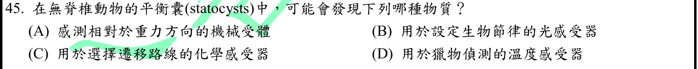
本地原卷PDF31 · 官方混科卷PDF31 · 官方原答案PDF1最下方生物表 · 已核對生物釋疑PDF3下方–5
官方採計：A 原答案：A
未列於本輪取得113生物釋疑PDF3下方至5；依同年度答案PDF1最下方生物表採計
主分類：Ch50 Sensory and Motor Mechanisms
50.2 / Sensing of Gravity and Sound in Invertebrates
目錄行3348；條目起始印刷頁1112；實際目錄 PDF49
主分類理由：50.2 / Sensing of Gravity and Sound in Invertebrates：平衡囊藉機械受器感知相對重力方向，最小目錄為無脊椎動物重力感覺。
次分類理由：無另列最小次條目；按完整A–D比較的是感覺類型而非化學組成，statocyst機械感受重力支持A。保持原文，最小重力感覺條目足夠。
科學說明：A。statolith受重力移動／施壓引起感覺毛偏折，由機械受器感測；不是以光、化學或溫度辨向。題目稱「物質」但選項實為受器功能，保留原題措辭，不改成另一道化學成分題。
來源涵蓋範圍：Campbell正文支援分類原理；題目限定及來源措辭差異保留於科學說明。
教材正文：印刷1110／PDF1159、印刷1111／PDF1160、印刷1112／PDF1161
補充來源：本題未另列課本外來源
另行比較：原題問物質卻列受器功能，要不要改成平衡石成分？
按完整A–D比較的是感覺類型而非化學組成，statocyst機械感受重力支持A。保持原文，最小重力感覺條目足夠。
結論：證據確認，分類疑義已解決。完整覆核紀錄
Q46 · 48.4 / Neurotransmitters 正式分類
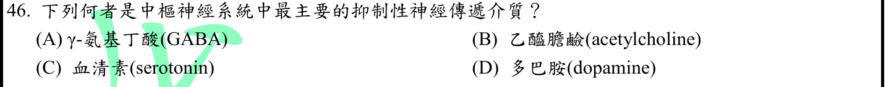
本地原卷PDF31 · 官方混科卷PDF31 · 官方原答案PDF1最下方生物表 · 已核對生物釋疑PDF3下方–5
官方採計：A 原答案：A
未列於本輪取得113生物釋疑PDF3下方至5；依同年度答案PDF1最下方生物表採計
主分類：Ch48 Neurons, Synapses, and Signaling
48.4 / Neurotransmitters
目錄行3231；條目起始印刷頁1080；實際目錄 PDF48
主分類理由：48.4 / Neurotransmitters：GABA與其他介質比較，屬神經傳遞物質功能。
次分類理由：無另列最小次條目；GABA在選項中最符合，脊髓glycine及其他介質的受器依賴性保留。48.4 Neurotransmitters主目直接命中，不誤掛特定藥理處方。
科學說明：A。GABA是腦內主要抑制性傳遞物質；脊髓甘胺酸亦重要，其他列出的介質可能依受器與迴路產生不同效應。不能將「最主要」擴寫成只有GABA能抑制，或每個發育時期與離子條件都相同。
來源涵蓋範圍：Campbell正文支援分類原理；題目限定及來源措辭差異保留於科學說明。
教材正文：印刷1080／PDF1129、印刷1081／PDF1130、印刷1082／PDF1131
補充來源：本題未另列課本外來源
另行比較：中樞最主要抑制介質是否意味其他介質皆興奮？
GABA在選項中最符合，脊髓glycine及其他介質的受器依賴性保留。48.4 Neurotransmitters主目直接命中，不誤掛特定藥理處方。
結論：證據確認，分類疑義已解決。完整覆核紀錄
Q47 · 43.1 / Innate Immunity of Vertebrates 正式分類
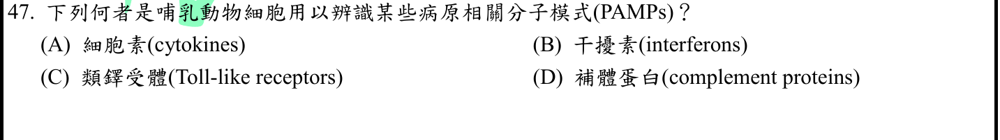
本地原卷PDF31 · 官方混科卷PDF31 · 官方原答案PDF1最下方生物表 · 已核對生物釋疑PDF3下方–5
官方採計：C 原答案：C
未列於本輪取得113生物釋疑PDF3下方至5；依同年度答案PDF1最下方生物表採計
主分類：Ch43 The Immune System
43.1 / Innate Immunity of Vertebrates
目錄行2870；條目起始印刷頁954；實際目錄 PDF47
主分類理由：43.1 / Innate Immunity of Vertebrates：哺乳類先天細胞藉TLR辨認PAMP，主列脊椎動物先天免疫。
次分類理由：無另列最小次條目；原題哺乳細胞對PAMP辨識的標準受器為TLR；補體有辨識和效應角色但不取代TLR作此題最佳答案。43.1先天免疫條目包含對比，分類無待解部分。
科學說明：C。TLR是辨識某些病原模式的受器；細胞素與干擾素主要是訊號分子。補體亦參與先天辨識與效應，不能概括說完全不辨識病原，但題目指定細胞受器層次時TLR最直接。
來源涵蓋範圍：Campbell正文支援分類原理；題目限定及來源措辭差異保留於科學說明。
教材正文：印刷954／PDF1003、印刷955／PDF1004、印刷956／PDF1005
補充來源：本題未另列課本外來源
另行比較：補體也能辨病原，是否需否定其先天功能才能選C？
原題哺乳細胞對PAMP辨識的標準受器為TLR；補體有辨識和效應角色但不取代TLR作此題最佳答案。43.1先天免疫條目包含對比，分類無待解部分。
結論：證據確認，分類疑義已解決。完整覆核紀錄
Q48 · 46.4 / Hormonal Control of Female Reproductive Cycles 正式分類
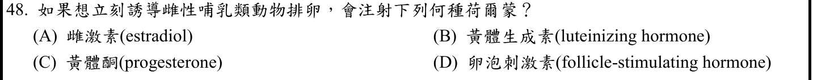
本地原卷PDF32 · 官方混科卷PDF32 · 官方原答案PDF1最下方生物表 · 已核對生物釋疑PDF3下方–5
官方採計：B 原答案：B
未列於本輪取得113生物釋疑PDF3下方至5；依同年度答案PDF1最下方生物表採計
主分類：Ch46 Animal Reproduction
46.4 / Hormonal Control of Female Reproductive Cycles
目錄行3104；條目起始印刷頁1032；實際目錄 PDF48
主分類理由：46.4 / Hormonal Control of Female Reproductive Cycles：LH高峰觸發成熟卵泡排卵，屬雌性生殖週期激素控制。
次分類理由：無另列最小次條目；1033明列LH surge後約一天排卵，故B代表最直接觸發不是零延遲；成熟卵泡前提保留。46.4週期調節為最小合格條目，沒有擴張成實際動物操作指引。
科學說明：B。LH是題列最直接的排卵觸發訊號，FSH偏卵泡發育、雌激素參與上游回饋、黃體酮維持週期後段。原題「立刻」須限於已有反應能力的成熟卵泡，非任意時期注射就瞬間排卵；本地1033說人類排卵約在LH高峰後一天，不提供實際動物注射處方。
來源涵蓋範圍：Campbell正文支援分類原理；題目限定及來源措辭差異保留於科學說明。
教材正文：印刷1032／PDF1081、印刷1033／PDF1082、印刷1034／PDF1083
補充來源：本題未另列課本外來源
另行比較：原題立刻是否符合LH至排卵延遲，FSH可否同樣觸發？
1033明列LH surge後約一天排卵，故B代表最直接觸發不是零延遲；成熟卵泡前提保留。46.4週期調節為最小合格條目，沒有擴張成實際動物操作指引。
結論：證據確認，分類疑義已解決。完整覆核紀錄
Q49 · 50.3 / The Vertebrate Visual System 正式分類
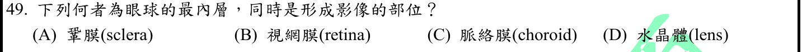
本地原卷PDF32 · 官方混科卷PDF32 · 官方原答案PDF1最下方生物表 · 已核對生物釋疑PDF3下方–5
官方採計：B 原答案：B
未列於本輪取得113生物釋疑PDF3下方至5；依同年度答案PDF1最下方生物表採計
主分類：Ch50 Sensory and Motor Mechanisms
50.3 / The Vertebrate Visual System
目錄行3364；條目起始印刷頁1119；實際目錄 PDF49
主分類理由：50.3 / The Vertebrate Visual System：眼球感光層與成像位置屬脊椎動物視覺構造。
次分類理由：無另列最小次條目；比較眼球層次及光路，最內感光層為視網膜B；水晶體與中樞作用在不同階段。50.3視覺條目足夠，與Q1同條目不代表重複題目。
科學說明：B。視網膜為最內側感光神經層，水晶體把光聚焦到視網膜；鞏膜與脈絡膜分別偏保護與血管供應。視網膜上光學成像與大腦形成視知覺仍是不同階段。
來源涵蓋範圍：Campbell正文支援分類原理；題目限定及來源措辭差異保留於科學說明。
教材正文：印刷1119／PDF1168、印刷1120／PDF1169、印刷1121／PDF1170
補充來源：本題未另列課本外來源
另行比較：視網膜成像與水晶體聚焦、大腦視知覺是否混成一個部位？
比較眼球層次及光路，最內感光層為視網膜B；水晶體與中樞作用在不同階段。50.3視覺條目足夠，與Q1同條目不代表重複題目。
結論：證據確認，分類疑義已解決。完整覆核紀錄
Q50 · 39.2 / A Survey of Plant Hormones 正式分類
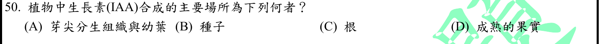
本地原卷PDF32 · 官方混科卷PDF32 · 官方原答案PDF1最下方生物表 · 已核對生物釋疑PDF3下方–5
官方採計：A 原答案：A
未列於本輪取得113生物釋疑PDF3下方至5；依同年度答案PDF1最下方生物表採計
主分類：Ch39 Plant Responses to Internal and External Signals
39.2 / A Survey of Plant Hormones
目錄行2557；條目起始印刷頁847；實際目錄 PDF45
主分類理由：39.2 / A Survey of Plant Hormones：IAA主要生成部位在植物激素總覽與auxin段落，最小真實TOC為A Survey of Plant Hormones。
次分類理由：無另列最小次條目；重看已去空白的完整Q50，846表載主要芽尖幼葉及根尖例外，847–848Auxin正文續證。條目起始847與證據846分欄保存，原圖全部A–D仍在；分類已明確。
科學說明：A。Campbell表39.1（印刷846）明列芽尖分生組織與幼葉是主要合成處，根尖亦能合成；發育種子與果實高IAA不必等於全為當地新合成。主目錄起始847，相關總表在846，兩頁定位分開保存，不另虛構TOC的Auxin葉項。
來源涵蓋範圍：Campbell正文支援分類原理；題目限定及來源措辭差異保留於科學說明。
教材正文：印刷846／PDF895、印刷847／PDF896、印刷848／PDF897、印刷849／PDF898
補充來源：本題未另列課本外來源
另行比較：A是否唯一IAA合成處，表39.1的前置頁能否寫成葉項起始頁？
重看已去空白的完整Q50，846表載主要芽尖幼葉及根尖例外，847–848Auxin正文續證。條目起始847與證據846分欄保存，原圖全部A–D仍在；分類已明確。
結論：證據確認，分類疑義已解決。完整覆核紀錄
目前篩選沒有符合的題目；本年度總數仍為50題。
補充來源
查證日期：2026-09-09。使用原始研究摘要、官方資料與作者教材，不宣稱所有出版商全文已取得。詳細界線見來源紀錄。
- S01 OpenStax Anatomy and Physiology 2e 20.2；APS動脈壓估算研究
平均動脈壓是時間平均；舒張壓加三分之一脈壓是常用周邊動脈靜息近似，本題算110。
實讀範圍：OpenStax Mean Arterial Pressure段落及公式；APS 2005研究頁檢索段落，僅使用其周邊動脈估算敘述，不把主動脈研究結論移植本題。
原始來源1 · 原始來源2 - S02 Nobel Assembly 2023 Advanced information
mRNA可由DNA模板經體外轉錄製得；核苷修飾與傳遞技術促成疫苗應用。RNA不穩定及遞送問題不能被概括成容易保存。
實讀範圍：官方2023背景頁檢索回傳的體外轉錄、RNA穩定性與核苷修飾段落；基礎網址曾403，未宣稱下載完整PDF。
原始來源1 - S03 Nobel Assembly 2009 Advanced information
端粒酶含蛋白催化組件及內在RNA模板；實驗以RNA序列改變造成新生端粒DNA序列改變證實模板角色。
實讀範圍：官方背景頁檢索回傳內在RNA模板、Greider與Blackburn研究及機制段落；不混用四膜蟲TTGGGG與人TTAGGG序列。
原始來源1 - S04 Maibom-Thomsen等2019 Immunoglobulin G structure and rheumatoid factor epitopes
RF是辨識IgG等免疫球蛋白表位的自體抗體；不能把RF本身直接說成被攻擊而造成RA的組織抗原。
實讀範圍：原始研究PMC摘要與Introduction的RF定義、IgG Fc表位段落；未作患者診斷或把所有RA歸因RF。
原始來源1 - S05 Luminal NaCl delivery regulates basolateral PGE2 release from macula densa cells（JCI 2003）
實驗顯示緻密斑在低管腔鹽濃度時釋放PGE2，支援低NaCl訊息促腎素的機制；與一般血漿鈉濃度不能直接畫等號。
實讀範圍：JCI研究頁及同一期研究摘要的低NaCl與PGE2結果；另檢索Macula densa control of renin secretion摘要句，低NaCl提高腎素。
原始來源1 · 原始來源2 - S06 Dean 2005 Blood Groups and Red Cell Antigens 第4章
RhD陰性母親經RhD陽性血球致敏，再遇陽性胎兒時可有IgG跨胎盤溶血；首次輸血、早期出血或流產也可能先致敏。
實讀範圍：NCBI官方出版教材Sensitization occurs during the first pregnancy與HDN occurs in subsequent pregnancies兩節檢索全文段落。
原始來源1 - S07 Barry等2007 EEG differences between eyes-closed and eyes-open resting conditions
28位大學生的靜息EEG實驗顯示閉眼至睜眼時平均alpha功率降低，支持閉眼放鬆情境；不是任何個體的診斷標準。
實讀範圍：PubMed原始研究完整摘要：目的、方法、結果、結論；未讀出版商全文。
原始來源1 - S08 NEB C3020 strain properties
官方菌株文件明列β-galactosidase可裂解X-gal形成藍色菌落，確認本題酵素名稱。
實讀範圍：NEB官方FAQ中lacZ互補與X-gal裂解段落；只用酵素受質事實，不把題目擴寫為已進行藍白篩選。
原始來源1 - S09 Livak與Schmittgen 2001 2(-Delta Delta C(T)) Method
相對定量比較目標轉錄本在不同樣本的變化；本題以2為底的倍增假設，ΔΔCt=-3，樣本1對2為8倍。
實讀範圍：PubMed完整摘要及論文題名；僅摘要，不宣稱已讀全文假設推導；效率一致且每循環倍增明列為本題計算前提。
原始來源1 - S10 López-Fernández與Maldonado 2013 Programmed cell death during quinoa perisperm development
藜麥外胚乳由珠心組織持續發育，儲存大量澱粉，是胚乳之外的種子儲藏組織，故Q38外胚乳不能排除。
實讀範圍：PMC原始研究摘要、Introduction及外胚乳澱粉儲存結果段落；未把單一物種推成所有種子都有外胚乳。
原始來源1 - S11 NIAMS Gout（2023-12覆核）
尿酸鹽蓄積形成關節晶體引發發炎；高尿酸者並非人人出現痛風。
實讀範圍：官方Overview與Cause of Gout段落；未提供用藥或個人醫療建議。
原始來源1 - S12 Ruprecht等2019 The Molecular Mechanism of Transport by the Mitochondrial ADP/ATP Carrier
ADP/ATP載體將ADP輸入粒線體基質並輸出ATP；邦克列酸與載體結合並鎖住構形，直接標的為ANT。
實讀範圍：PubMed原始Cell研究完整摘要，含bongkrekic acid結合與matrix-open構形；未宣稱全文或本地Campbell明列毒素。
原始來源1 - S13 臺灣食藥署2023-05-02 吃褪黑激素能幫助睡眠嗎
官方資料說明夜間分泌較多及產品按藥品列管；用以核對113年題目D，不能當作已取得療效共識。
實讀範圍：發布與維護日期、解答1–4原頁段落；與本地Campbell松果體解剖及官方113釋疑分開。
原始來源1 - S14 Garthwaite等1989 NMDA receptor activation induces nitric oxide synthesis from arginine in rat brain slices
原始實驗顯示NMDA刺激可經NO合成而提高cGMP；NO是有實際訊息功能的分子，不可因Q44採B而說它不參與細胞內訊息。
實讀範圍：PubMed完整摘要的NMDA、L-NMMA、L-arginine與cGMP結果；僅腦切片研究，不概括所有細胞迴路。
原始來源1